Brave Feelings Lab
Calm the Storm
Anger Management Program
◆
Enter your access key to begin
Anger Management Program
Enter your access key to begin
Something brought you here. Maybe it was an outburst you regret. A relationship strained by your anger. A pattern you can see clearly — but haven't been able to break.
Whatever brought you, I want you to know this: anger is not your enemy. It is a signal. It is telling you something matters. What we're going to learn together is how to hear that signal without letting it drive.
Over the course of this program, you'll work through five phases — from understanding your storm to navigating it with wisdom. This is not about eliminating anger. It's about becoming someone who can feel it, name it, and choose what to do next.
That's a skill. And skills are learned.
This program supports — but does not replace — professional care. If you are in crisis or fear you may harm someone, please seek immediate professional help before continuing.
Please read each statement carefully and answer honestly. This helps us make sure this program is right for you right now.
I am currently having thoughts of harming myself or ending my life.
I have recently threatened or harmed another person, or I fear I might.
There is a weapon in my home that I have considered using in anger.
A child in my care has been at risk due to my anger.
Based on your answers, this program alone is not enough for your current situation. Please contact a licensed mental health professional, call a crisis line, or go to your nearest emergency service before continuing.
This is not a judgment — it is care. You deserve more than a screen right now.
Handled via modal overlay — no screen content needed.
Your storm history will appear here as you progress through the program.
"We measure to learn — not to judge. Every screen you complete is a step toward mastering the storm."
"But the fruit of the Spirit is love, joy, peace, longsuffering, kindness, goodness, faithfulness, meekness, self-control; against such there is no law."
Long-term character — not just symptom reduction — is the true measure of this journey.
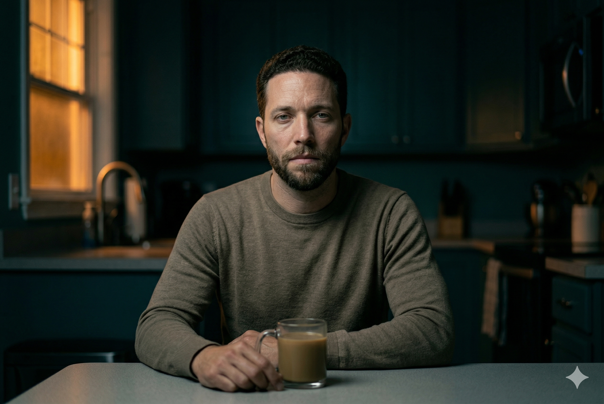
Jordan's phone buzzes for the ninth time. Work. The kitchen smells like burnt dinner. Sam is asking a question. A child's cup tips and spills across the table.
Something hot rises in Jordan's chest. The jaw tightens. The voice sharpens before a single word is chosen.
Anger is not your character flaw. It is not proof you are broken. It is a signal — firing because something matters to you. The question this program asks is not "how do I stop feeling angry?" It is "what do I do with anger when it arrives?"
Modern emotion science treats anger as a coordinated response tendency — involving physiological changes (heart rate, muscle tension), subjective experience (feeling hot, agitated), and behavioral components (voice, posture, action urges).
Anger episodes are not the same as aggression. Feeling angry is normal and adaptive. Acting aggressively is the clinical problem — and it is a learned pattern that can be changed.
"Anger is a completely normal, usually healthy, human emotion. But when it gets out of control and turns destructive, it can lead to problems — at work, in personal relationships, and in the overall quality of your life."
Before we go further — where is your storm level right now, in this moment?
This is your starting point. We will rate again at the end of every session to track change over time.
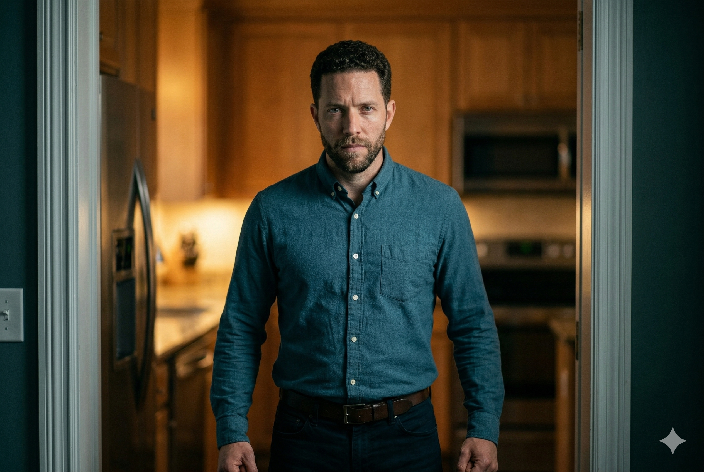
Jordan once told me: "I don't even know it's happening until I've already said the thing I regret." That's what the storm meter changes. You can't navigate a storm you won't look at.
Anger intensity varies — and the SAMHSA CBT Anger Management model centres on a personal anger meter (0–10) as the foundation of self-monitoring. Arousal intensity directly predicts the likelihood of destructive expression: the higher the number, the less access you have to rational problem-solving.
"Before we interpret meaning, we measure intensity. Rate anger right now: 0–10. Then name what you notice in your body."
Personalise the meter. What does each zone feel like in your body?
These descriptions are now your personal early warning system. You will use them every session.
Wisdom practiced is wisdom earned.
"Let your forbearance be known unto all men. The Lord is at hand."
Philippians 4:5 (ASV)"You came here carrying a storm. You leave knowing how to navigate it. That is not a small thing. The fruit takes time to grow — but you have planted it. Keep practicing. Keep repairing. Keep choosing wisely."
Return to your Calm Menu, your Values Compass, and your Repair Ritual regularly. The skills you have built are only as strong as the practice you give them.
Jordan doesn't notice it starting. Later, Sam will say: "I knew — I could see it in your jaw, your posture, the way you stopped making eye contact." Jordan had no idea.
Your body is sending signals long before your conscious mind receives them. Cue awareness is the very first skill — because you cannot interrupt a storm you haven't noticed yet.
Anger cues fall into three categories — all of which can be trained for awareness:
"Identifying the cues that signal anger arousal is the foundation of anger control. Without cue awareness, intervention is impossible."
Select every cue you personally recognise in yourself:
Everyone blamed the spilled drink. But Jordan hadn't slept properly in three days. There had been a humiliating comment from a manager at 2pm. The traffic added forty minutes to the commute. The argument started over a cup of juice.
Understanding the trigger stack changes your relationship to your own anger. Instead of blaming the last event, you start to ask: "What was I already carrying?" That question is the beginning of real self-knowledge.
The CBT model distinguishes between triggers (external events) and vulnerability factors (internal conditions that raise baseline arousal). Both matter:
Events that provoke anger: perceived disrespect, injustice, blocked goals, criticism, noise, interruptions.
Conditions that fill the tank: poor sleep, hunger, physical pain, prior stress, alcohol, loneliness, low mood.
When vulnerability is high, the threshold for triggering drops dramatically. A small trigger on a full tank becomes an explosion.
"Anger does not arise in a vacuum. The accumulation of stressors — physical, psychological, and situational — lowers the threshold at which anger is triggered."
List up to 3 things that are already in your fuel can right now:
Knowing the stack is not an excuse for the explosion — it is the first step toward preventing the next one.
I want to be honest with you. This program is powerful — and it also has limits. If you are afraid you may harm someone — or yourself — this program is not enough right now. That is not a failure. It is wisdom to know when you need more than a screen can offer.
Digital programs can meaningfully support anger management — and they cannot replace professional evaluation when safety is at risk.
Seek immediate professional help if any of the following apply:
Some patterns of anger — impulsive, explosive outbursts disproportionate to the situation — may reflect a clinically significant condition. In a randomised controlled trial, Dr. Emil F. Coccaro and colleagues found that fluoxetine reduced aggression and irritability in IED patients compared to placebo — though full or partial remission occurred in fewer than half.
If you suspect your anger pattern may be IED or connected to another diagnosis, psychotherapy remains the primary treatment and medication may be adjunctive. Please consult a licensed prescriber — do not self-medicate.
"Digital tools can support therapy. They do not replace it. If you are afraid you may harm someone, this program is not enough — get immediate professional help."
The spill happens. Jordan's hand rises toward the sharp word that is already forming. And then — something different. A pause. Not long. Two seconds. But in those two seconds, Jordan notices the heat in the chest and remembers: I have a choice here.
The pause is not passive. It is the most active choice you can make in an angry moment. You are not suppressing anger — you are creating the space in which wisdom can operate. That space is everything.
Anger management programs consistently teach interruption or monitoring as the first behavioural skill. The STOP skill (adapted from DBT) provides a structured micro-pause that interrupts automatic escalation before it peaks.
The pause works because it introduces a deliberate delay between the trigger (stimulus) and the response. In that gap, the prefrontal cortex — the brain's rational decision-making centre — can re-engage. Without the pause, the amygdala-driven response arrives unchallenged.
"Between stimulus and response there is a space. In that space is our power to choose our response. In our response lies our growth and our freedom."
Think of the last situation that made you angry. Before you mentally replay it — pause. Place one hand on your chest. Take one slow breath. Now answer:
Write your personal "pause phrase" — the words you will say to yourself when the storm rises: e.g. "Not yet." or "Choose wisely."
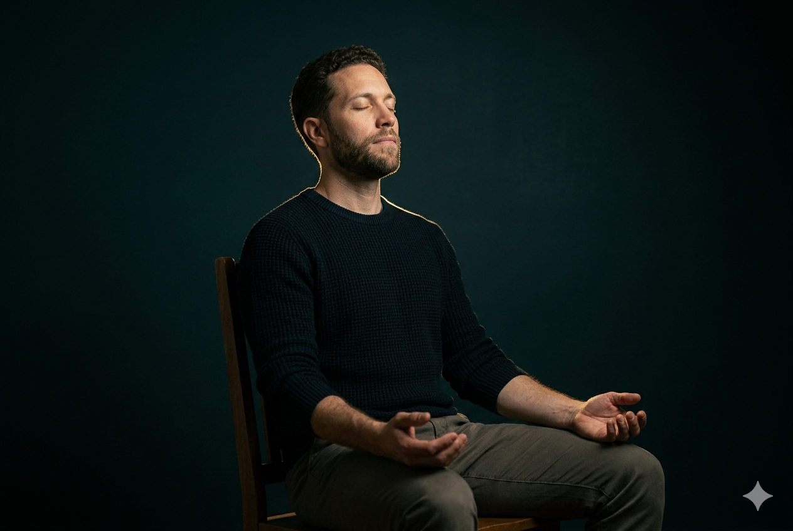
Jordan's storm level is at 8. The argument hasn't started yet, but the body is already in fight mode — heart hammering, chest tight, jaw locked. Dr. Patel's voice cuts through:
Your exhale is longer than your inhale — and that is not an accident. A longer exhale activates the parasympathetic nervous system, the part of your body that calms the alarm. This is not mysticism. It is physiology. And it works in ninety seconds.
A large meta-analysis of 154 studies (10,189 participants) found that arousal-decreasing activities — breathing, relaxation, meditation — robustly reduce anger and aggression. Arousal-increasing activities (venting, exercise while angry) do not.
The mechanism: slow breathing with an extended exhale stimulates the vagus nerve, which activates the parasympathetic nervous system — shifting the body from sympathetic "fight or flight" toward the calmer "rest and digest" state. This directly counteracts the physiological signature of anger arousal.
"Slow-paced breathing, particularly with extended exhalation, has robust effects on autonomic balance and emotional regulation — reducing subjective anxiety and physiological markers of stress."
Before you use the breath timer on the left — rate your current storm level:
Now use the breath timer on the left — complete 4 full rounds (about 90 seconds). Then come back and rate again. Most people drop 2–4 points.
Jordan has stepped away from the kitchen. The breath helped. But the tension is still sitting in the shoulders — a residue of the storm, like pressure that hasn't been released. Dr. Patel introduces the next layer.
Anger parks itself in three places first: the jaw, the shoulders, and the fists. These are your body's three anger storage points. PMR empties them deliberately — tense, hold, release — so the physiological grip of anger cannot drive your words before your mind has caught up.
Progressive Muscle Relaxation (PMR) was developed by Dr. Edmund Jacobson in the 1920s and remains one of the most widely used and researched relaxation techniques in clinical practice. The principle is straightforward: deliberate muscle tension followed by sudden release produces a deeper state of relaxation than simply "trying to relax."
For anger management specifically, PMR targets the muscle groups most activated during anger arousal — the jaw, shoulders, and hands — interrupting the physiological chain before it escalates to verbal or physical aggression. Even a 3-group abbreviated PMR (what you'll practise here) produces measurable reductions in subjective tension.
"Progressive relaxation training consistently demonstrates effectiveness in reducing physiological tension, anxiety, and anger arousal. Brief forms, applied at the point of provocation, show clinically meaningful results."
Use the interactive PMR sequence on the left. Work through all three muscle groups in order. After completing all three, rate how your body feels:
Most people rate 2–3 points lower after completing the full PMR sequence. Use this whenever you feel anger camping in your muscles.
Jordan stands in the kitchen doorway. The storm is at level 8. The breath helped somewhat. The PMR released the fists. But the argument is still right there — Sam's eyes are hurt, the spilled drink is still on the counter. Jordan knows: if the conversation starts now, it will end badly.
A time-out is not what angry people do by accident. It is what wise people do on purpose. The difference is the return commitment. An unplanned storming-out is abandonment. A structured time-out — signalled, timed, and completed with return — is one of the most effective de-escalation tools in relational conflict research.
The SAMHSA CBT Anger Management model identifies the time-out as a foundational component of anger control plans. The evidence base supports it: when physiological flooding occurs (heart rate sustained above approximately 100 bpm), problem-solving and listening capacity are severely impaired. The only clinically appropriate response is physiological down-regulation — which requires space and time, not continued conversation.
Signals clearly · Commits to return time · Uses time to calm (breathe, walk, PMR) · Returns as promised · Opens conversation gently
Leaving silently · No return commitment · Replaying the argument while away · Returning still flooded · Using silence as punishment
"Taking a time-out is not a sign of weakness or defeat. It is a sign that you value the relationship enough to handle it with care — and value yourself enough to act wisely rather than reactively."
Complete your personal time-out plan. Share this with the person you most often conflict with.
This contract is yours. The most important element is #4 — the return. Without it, a time-out becomes a shutdown.
Jordan is outside now — the time-out is in effect. But standing in the driveway, Jordan realises: there is no plan. Just the anger, replaying. Dr. Patel's voice surfaces from memory:
Your calm menu is not a list of things you might do. It is a pre-made decision for a moment when you cannot decide. When anger peaks, the prefrontal cortex — the part of your brain that weighs options — is offline. You execute the menu, not deliberate about it. Choose your five now, while you are calm.
A comprehensive meta-analysis found that arousal-decreasing activities robustly reduce anger and aggression across diverse populations. The key word is arousal-decreasing — activities that lower physiological activation, not ones that feel satisfying but maintain or increase it.
"The evidence is clear: activities that decrease physiological arousal are effective for reducing anger and aggression. Activities that increase arousal — even those believed to be cathartic — are not."
The Storm appears — the cartoon figure materialises beside Jordan in the driveway, grinning, holding a punching bag. "Just let it out! Hit something! Call someone and vent about what Sam did!" Jordan almost reaches for the phone. Then remembers what Dr. Patel said.
The catharsis myth is one of the most persistent and damaging beliefs in popular psychology. Venting does not release anger — it rehearses it. Every time you replay the offence while expressing it, you are reinforcing the neural pathways of the grievance. The flame gets fed, not extinguished.
Dr. Brad Bushman's landmark 2002 study directly tested the catharsis hypothesis. Participants who vented by hitting a punching bag while thinking about the person who angered them reported higher anger and behaved more aggressively afterward — not less. The control group who did nothing showed better outcomes.
A subsequent meta-analysis of 154 studies and 10,189 participants confirmed the finding at scale: arousal-decreasing activities robustly reduce anger. Arousal-increasing activities do not. Catharsis as a treatment strategy is not supported by the evidence.
"Doing nothing at all was more effective than venting anger. Venting anger is not a healthy way of managing it."
Which of these beliefs have you held about venting? Be honest — the myth is very common:
Checking any of the first four is not a flaw — these beliefs are extremely common. Recognising them is the first step to replacing them with what actually works.
It is 2:47 AM. Jordan is lying in bed, staring at the ceiling, completely awake. The argument from eight hours ago is playing in full, in detail, for the forty-seventh time. Each replay finds a new injustice. Each injustice fuels the next replay. The storm level is now higher than it was in the kitchen.
Rumination feels productive — it feels like you are processing, preparing, understanding. You are not. You are rehearsing. Every replay strengthens the neural pathway of the grievance and raises your physiological arousal. The only useful thing you can do at 2:47 AM is notice the loop and exit it — deliberately, not by distraction, but by naming what is happening.
Rumination is defined as repetitive, passive focusing on one's distress and its possible causes and consequences. Research consistently shows it sustains and worsens negative emotional states. For anger specifically, ruminating on a provocation while venting was shown by Bushman (2002) to produce the worst outcomes — higher aggression than either venting alone or doing nothing.
ACT (Acceptance and Commitment Therapy) offers the most clinically precise intervention: cognitive defusion — noticing the thought as a thought rather than a fact. "I am noticing my mind is replaying the argument" creates distance between the self and the content of rumination, reducing its emotional grip.
"Rumination — repetitively focusing on one's feelings of distress — is one of the most potent predictors of the maintenance and intensification of anger over time."
Write your personal redirect phrase — the exact words you will say to yourself when you notice the loop starting:
When does rumination most often hit you? Identify your high-risk times:
The morning after. The kitchen is quiet. Sam has left for work without saying goodbye. Jordan sits at the table, staring at the dried spill no one cleaned up. The shame is physical — a weight in the chest that feels worse than the anger did.
The aggression cycle is not a character flaw — it is a learned pattern with a predictable structure. And because it has structure, it has intervention points. The buildup phase is where all your skills apply. The explosion is too late. The aftermath is repair territory. Map the cycle. Own the buildup.
The SAMHSA CBT Anger Management model identifies three phases that characterise most anger episodes: buildup, explosion, and aftermath. Understanding this structure is foundational to the entire treatment approach because each phase has specific intervention targets.
"Your goal is simple: break the cycle before level 10. The buildup phase is where intervention is possible. The explosion phase is where intervention is too late. Learn to recognise which phase you are in."
Jordan has cleaned up the kitchen. Sam comes home at 6pm. Jordan is sitting at the table — not on the phone, not defensive, not rehearsing arguments. Just waiting. When Sam walks in, Jordan says something Sam has never heard before:
"I'm sorry you felt that way" is not an apology — it makes the other person's reaction the problem. A real apology names the specific action, its impact on the other person, and a concrete plan for change. Without all three, the apology is a performance, not a repair.
Behavioural research on relational repair consistently shows that specificity is the critical variable in effective apologies. Vague apologies ("I'm sorry for everything") are often experienced as dismissive. Apologies with a concrete behaviour-change plan are associated with genuine trust rebuilding over time.
The three-part structure used here is adapted from CBT repair protocols and mirrors the structure used in many couples therapy models: acknowledgement of the specific behaviour, naming of its impact, and a forward-looking commitment to change — not just a feeling of remorse.
"A repair attempt is any statement or action — silly or serious — that prevents negativity from escalating out of control. The success of repair attempts is one of the most important factors in the long-term health of a relationship."
Three days after the kitchen incident. Jordan has completed the first modules, built the calm menu, written the time-out contract. Dr. Patel asks a question Jordan doesn't expect:
The person working on anger often does so in secret — ashamed of the pattern, unwilling to be seen as struggling. This secrecy increases the risk of relapse and removes the accountability structures that support lasting change. You do not need to tell everyone. But you need to tell someone.
The SAMHSA CBT Anger Management model explicitly includes social support as a component of effective anger control plans. Research consistently shows that social support functions as a buffer against stress arousal — one of the primary vulnerability factors for anger escalation.
An accountability partner serves two functions: emotional support in high-stress moments, and behavioural accountability for the commitments made in this program. Choose someone who will be honest with you — not someone who will simply validate your perspective when you are already flooded.
"Social support is one of the most robust protective factors in mental health outcomes. Its absence — social isolation — consistently predicts poorer regulation of negative emotions including anger."
Session with Dr. Patel. Jordan describes the kitchen scene blow by blow. Dr. Patel listens, then asks: "What were you saying to yourself in the moment before you responded?" Jordan pauses. Nobody has ever asked that before.
Hot thoughts share a family resemblance: they use words like always, never, everyone, nobody, should, must. They are absolute and global. Cool thoughts replace absolutes with accuracy — not optimism, not denial. Just a more precise, less inflammatory reading of what actually happened.
CBT for anger identifies hostile attribution bias as one of the core cognitive mechanisms maintaining anger problems — the tendency to interpret ambiguous events as intentionally provocative. Hot thoughts are the linguistic expression of this bias: absolute, personalised, catastrophising interpretations that maximise emotional arousal.
Always/never language · "They did it ON PURPOSE" · "This proves they don't care" · Global labelling · Catastrophising · Mindreading
Specific language · "They may have been stressed" · "This happened once" · Behaviour-focused · Reality-tested · Curious rather than certain
"The cognitive model of anger holds that it is not events themselves but our interpretations of events — particularly interpretations involving blame, injustice, and threat — that generate and sustain anger."
Think of a recent hot thought. Which pattern does it match?
Dr. Patel writes six words on the whiteboard: Always. Never. Must. Should. Everyone. Nobody. Then she turns to Jordan:
Cognitive distortions are not lies we tell deliberately — they are automatic patterns our minds run when emotion is high. The goal is not to never have them. It is to catch them fast enough to dispute them before they drive your behaviour. That speed comes from practice — exactly what we're doing now.
The ABCT (Association for Behavioral and Cognitive Therapies) identifies several cognitive distortions that are particularly prevalent in anger problems: demandingness (rigid rules about how others must behave), catastrophising (treating minor provocations as disasters), hostile attribution bias (assuming hostile intent), and global labelling (reducing a person to their worst behaviour).
CBT treatment targets these distortions through the A-B-C-D model — which you will learn in the next screen. The first step, however, is identification: you cannot dispute a distortion you have not named.
"Cognitive restructuring for anger involves identifying the specific appraisals and attributions that generate anger — particularly those involving blame, unfairness, and the belief that others must conform to one's expectations."
Dr. Patel hands Jordan a form. Four boxes. "This is where everything we've covered this phase comes together," she says. "Understanding the storm is not enough. You need a method for disputing it in real time."
The A-B-C-D model is the most powerful cognitive tool in this program. It is not complicated — but it requires practice to deploy in real time. Start by using it retrospectively — after the event, when you are calm. Over time, with enough practice, you will begin to run it in the moment, mid-escalation, before the words leave your mouth.
The A-B-C-D model was developed by Albert Ellis and is a foundational tool in Rational Emotive Behavior Therapy (REBT), subsequently adapted into CBT for anger by the SAMHSA protocol. The critical insight is that B — not A — causes C. This shifts the locus of change from external events (which you cannot control) to beliefs (which you can).
D (Dispute) operates at three levels: evidence-based disputation ("Is this actually always true?"), logical disputation ("Does it follow that because they asked a question, they don't respect me?"), and pragmatic disputation ("Is this belief helping me achieve what I actually want?"). All three are effective.
"The A-B-C model is central to the cognitive approach to anger: A (Activating event) triggers B (Beliefs and self-talk), which produces C (emotional and behavioural Consequences). Disputing irrational beliefs at B is the primary vehicle for changing C."
You have completed Phase 1: Understand the Storm. You now have:
Phase 2 begins next: Challenge the Thoughts — where you build the cognitive restructuring skills that make the storm's beliefs lose their grip.
The incident at work is two hours old. But Jordan is still replaying it — the manager's tone, the dismissive wave, the injustice of it. The Storm is whispering: "They always do this. They think you're worthless. Next time, say something." The spiral is tightening. Jordan reaches a moment — something has to break this loop.
You cannot dispute a thought you are still inside. Thought stopping creates the gap between you and the thought — the moment of distance in which you can see it clearly enough to challenge it. Without this step, the A-B-C-D model has no entry point. This is your entry point.
Thought stopping is a behavioural interruption technique used in CBT-based anger management to break automatic rumination before it escalates arousal. The SAMHSA anger management manual includes thought stopping as a first-line cognitive skill — used specifically to interrupt the repetitive angry self-talk that sustains physiological escalation.
The technique works because repetitive, hot self-talk rehearses and amplifies the angry state. Interrupting the loop does not resolve the underlying belief — but it reduces arousal to a level at which disputation becomes possible. Thought stopping is the on-ramp to the A-B-C-D model.
Important note: Thought stopping is not thought suppression. You are not pretending the thought did not happen — you are delaying engagement until your arousal level allows clear thinking. You will return to the thought, calmly, with the A-B-C-D model.
"Cognitive interruption strategies — including thought stopping — are designed to disrupt automatic escalation sequences before they become self-sustaining. The goal is access to deliberate processing."
Choose the interruption signal that fits you — the one you will actually use when the spiral starts:
This replacement statement is not a solution — it is a bridge. It holds you steady until your arousal drops enough for the A-B-C-D model to work.
Jordan has interrupted the thought spiral. The storm level has dropped from an 8 to a 5. There is a window now — small, but real. Dr. Patel sits across the desk. "Before your system re-escalates, we use this window. You're going to generate three alternate interpretations of what happened. Not to excuse it — to see it more completely."
Reappraisal does not mean telling yourself a comfortable lie. It means generating additional, credible interpretations before locking in on the most threatening one. The first interpretation your anger offers is rarely the complete picture. Dr. Gross's research is clear: reappraise early, and your nervous system responds less intensely.
Stanford psychologist Dr. James J. Gross established a critical distinction: antecedent-focused strategies (reappraisal, applied early, before the emotional response fully forms) reduce emotional experience without increasing physiological cost — while response-focused strategies (suppression, applied after the emotion peaks) reduce visible expression but increase sympathetic nervous system activation. You can be worse inside while appearing calmer outside.
Reappraisal is effective because it changes the meaning of the situation before the body's full anger response is deployed. The brain's emotional processing is interrupted at the interpretive stage — not after the reaction has already begun.
"Reappraisal, compared with suppression, resulted in greater decreases in emotional experience and less sympathetic nervous system activation — while having no negative impact on memory."
Think of a recent situation that angered you. Write your original hot interpretation, then generate three alternate readings of the same event:
You do not need to believe all three. You need to hold them as possibilities long enough for your nervous system to de-escalate.
Jordan is sitting with Dr. Patel, three sessions in. Something has shifted — but with it has come a fear. "What if I do all of this and I still feel angry? What if the anger never goes away?" Dr. Patel puts down her pen and looks directly at Jordan.
We are not trying to make you emotionless. Anger is information. It tells you that something matters, that a value has been threatened, that something needs your attention. The goal is never to silence that signal — it is to receive the information without being driven by the impulse the signal creates. That distinction is the whole program.
Dialectical Behaviour Therapy, developed by Dr. Marsha M. Linehan at the University of Washington, makes a foundational distinction that shapes this entire program: emotions — including anger — are not problems to be eliminated. They evolved for survival. They contain information. The goal of emotion regulation is not zero emotional experience; it is to reduce the suffering caused by emotions that are not serving you in a given moment.
Attempting to eliminate anger entirely is both clinically unsupported and psychologically counterproductive. Research on thought suppression shows that forcibly suppressing emotional experience increases its intrusive recurrence — the suppressed emotion returns with higher intensity. Respect for the emotion — acknowledging it without obeying every impulse it generates — is the clinically validated path.
"The purpose of regulating emotions is not to get rid of them. We need them for survival. The goal is to reduce the suffering that comes from emotions that are not serving you."
Think of a recent anger episode. Shift the question from "Why did I get so angry?" to "What was my anger trying to protect or communicate?"
Dr. Patel hands Jordan a blank card. "Write down what you felt — exactly what you felt — during that argument with Sam. Don't write 'angry.' That's the category, not the feeling." Jordan stares at the card. Three minutes pass. What comes out surprises them: humiliated, dismissed, unheard, scared of losing Sam.
There is a reason Dr. Siegel calls this "name it to frame it" — not "name it to tame it." The framing is the point. Naming the emotion precisely gives you a frame — a cognitive structure — through which you can see it accurately enough to respond wisely. "Angry" is too broad to work with. "Humiliated and scared" tells you exactly what needs to be addressed.
Research by Dr. Matthew Lieberman and colleagues (published in Psychological Science, 2007) demonstrated that affect labeling — putting feelings into words — reduces amygdala reactivity and increases prefrontal engagement. Accurately naming an emotional state produces measurable changes in the brain's regulatory circuitry.
Dr. Daniel Siegel of the UCLA School of Medicine brought this finding into clinical practice with "name it to frame it" — noting that precise emotional vocabulary gives the mind a handle on experience that allows for deliberate response. Dr. Linehan's DBT Emotion Regulation module lists accurate emotion labeling as a primary skill, preceding all other regulation strategies, because you cannot regulate an emotion you have not correctly identified.
Anger is frequently a secondary emotion — a response to a primary emotion (hurt, fear, shame, embarrassment) that is more threatening to acknowledge. Identifying the primary emotion beneath the anger is often the key to unlocking both the regulation pathway and the communication approach.
"Naming emotions activates the prefrontal cortex and reduces amygdala activation — the label does not simply describe experience; it changes its neurological profile."
Think of a recent anger episode. Select all the feelings that were present beneath the anger — feelings you may not have named in the moment:
This is the feeling you will eventually need to communicate to Sam — not the anger, but what the anger was protecting. We will build that communication skill in Phase 3.
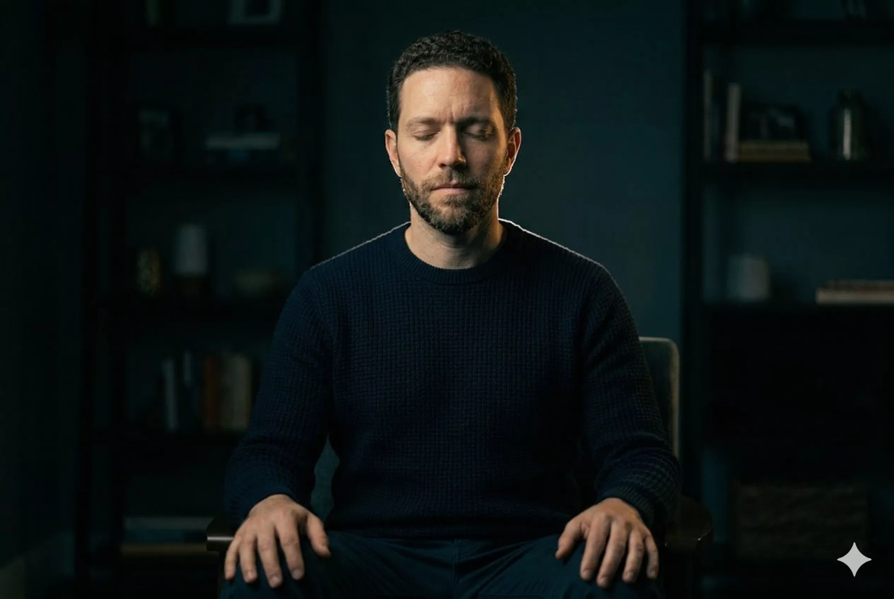
Jordan is alone in the living room. The argument is over but the anger is still present — quieter, but there. Benne steps forward from the narrative. "Don't leave yet. Don't distract yet. We are going to practise something specific right now — observing the anger without obeying it. This is the skill that changes everything about how you relate to the storm."
Mindful attention in anger means watching the wave without swimming in it. The wave is real — the anger, the urge, the heat in the chest. But you are not the wave. You are the person observing it. That distinction — observer vs. experience — is the foundational stance of mindfulness in anger work. You can be aware of anger without becoming anger.
Mindfulness-based approaches — including DBT mindfulness skills and ACT's defusion techniques — address a specific problem in anger escalation: cognitive fusion, the state in which the person is so merged with the angry thought that they cannot see it as separate from themselves. "I am angry" (fusion) vs. "I notice anger is present" (defusion) represent clinically different stances with different neurological and behavioural outcomes.
In DBT, mindfulness skills are explicitly applied to emotion regulation: observing the emotion, describing it without judgment, and allowing it to rise and fall without immediately acting on it. Research on mindfulness-based interventions in anger management consistently finds reductions in anger intensity and reactivity — not through suppression, but through increased psychological distance from the automatic anger response.
The wave metaphor is clinically accurate: anger, like all emotional states, has a natural rise-and-fall trajectory when the person does not actively fuel it through rumination or acting out. Mindful attention lets the wave complete its natural arc.
"Mindfulness means paying attention in a particular way: on purpose, in the present moment, and nonjudgmentally. Applied to anger, this means observing the experience rather than being swept away by it."
Think of a situation still carrying some anger — not at full intensity, but present. Work through these four observations:
Most people find the storm level drops 1–3 points through observation alone — without doing anything to the situation. That drop is the clinical effect of mindful attention.
Sam has just said something that lands hard. Jordan feels the urge rise immediately — the urge to say the sharp thing, to slam the door, to make the feeling stop by doing something. The urge is so strong it feels like a fact: I have to say this. I have to do something right now. Benne speaks quietly. "That feeling — it is not a command. It is a wave. You can surf it."
Research on urge duration tells us something important: most urges, if not acted on and not consciously fuelled, peak within 20–30 minutes and then naturally subside. The urge to say the harmful thing feels permanent. It is not. Your job is to outlast it, not to fight it. Surfing — not battling. Riding — not resisting.
Urge surfing was developed within the Acceptance and Commitment Therapy (ACT) framework as an alternative to urge suppression. Rather than trying to push the urge away — which often paradoxically strengthens it — the person is taught to observe the urge as a transient physiological and cognitive state, notice its rise and fall, and allow it to pass without acting on it.
The technique was originally developed by psychologist G. Alan Marlatt for substance craving in addiction treatment and subsequently applied broadly to impulse control, including anger-driven urges. The key clinical principle is non-attachment to the urge outcome: the person is not trying to make the urge disappear, nor are they obeying it. They are witnessing its arc — rise, peak, fall — and discovering that the urge does not require obedience in order to eventually resolve.
"Urge surfing involves observing the urge as a wave that rises, peaks, and falls — without acting on it. The goal is not to eliminate the urge but to change one's relationship to it."
Think of the last time you had a strong urge to say or do something harmful in anger. Walk through the urge surfing protocol retrospectively:
Benne steps forward from the narrative, speaking directly. "We have spent six screens learning to interrupt, reappraise, label, observe, and surf. Now we go deeper — to the question underneath all of it. Not 'what do I feel?' Not 'what do I want to say?' The real question: when the storm comes, who do you want to be?"
The Lighthouse in the Calm the Storm narrative does not rescue Jordan — it orients. This is the clinical truth of values-based treatment: values do not remove the storm. They give you a bearing to steer by while the storm is still active. The question is not what you feel. It is who you choose to be in what you feel.
In Acceptance and Commitment Therapy, values clarification is a central intervention. Values are defined as freely chosen, verbally constructed consequences of ongoing dynamic patterns of activity — in plain terms: directions you choose to move in, not destinations you arrive at. Unlike goals (which you can achieve and finish), values are ongoing commitments that guide behaviour across all contexts.
In anger management, values function as a behavioural compass: when the impulse pushes you toward the harmful action, the value gives you an alternative direction. Research on ACT-based interventions for anger consistently finds that values clarity increases psychological flexibility — the ability to act in line with your values even in the presence of strong negative emotion.
"Psychological flexibility — the ability to contact the present moment fully as a conscious human being, and to change or persist in behaviour when doing so serves valued ends — is the goal of ACT."
These are the values that will serve as your navigational north stars for the rest of this program. Choose the three that matter most to you — who you want to be in your relationships, especially when anger is present:
These values will appear on your Values Compass throughout the remaining program. They are your navigational stars — not a standard you always meet, but a direction you always steer toward.
Dr. Patel draws three columns on the whiteboard: Passive. Aggressive. Assertive. "Jordan, every time you are in conflict with Sam, you are choosing — consciously or not — which column to live in. Let's make that choice conscious."
The middle column — assertive — is often the hardest to find in the moment. It requires holding two things simultaneously: your legitimate need and the other person's dignity. You are not giving up your need. You are not attacking theirs. You are communicating from your values, not your storm level.
The SAMHSA anger management manual identifies three communication styles that operate in conflict situations. Passive communication avoids conflict at the cost of self-expression — needs go unmet and resentment accumulates over time. Aggressive communication expresses needs but through blame, contempt, or threat — which damages trust and escalates the situation. Assertive communication is the clinically targeted style: expressing needs and boundaries directly, calmly, and respectfully, without attacking the other person's character.
Assertiveness is not natural for most people in high-anger situations — it is a learned skill requiring practice. The key elements: using "I" language, stating specific behaviours rather than character labels, naming needs rather than demands, and maintaining a calm tone even under pressure.
"Assertiveness training teaches clients to express their thoughts and feelings in a direct, honest, and appropriate way — standing up for their rights without violating the rights of others."
Think of something you have said aggressively in anger. Rewrite it in the assertive style — same truth, different delivery:
The assertive version does not pretend the hurt did not happen. It communicates the same truth — through a channel that the other person can actually hear without becoming defensive.
Three days after the kitchen argument, Jordan and Sam are attempting to talk. Without a structure, every previous attempt has slid back into the same patterns — one person defending, the other accusing. Dr. Patel has given Jordan a card with five steps. Jordan holds it under the table. Structure instead of storm.
Most conflicts escalate not because people disagree, but because they feel unheard. The five-step model does something simple and powerful: it slows the conversation down enough that both people feel heard before any solution is proposed. Agreement becomes possible when understanding comes first. Skip understanding, and you are just trading positions.
"The conflict resolution model provides a structured, stepwise approach to resolving disagreements — replacing reactive escalation with deliberate, values-guided problem-solving."
Think of an unresolved conflict with Sam or someone close to you. Walk it through the five-step structure:
Jordan is about to say something to Sam. The old words are already forming: "You never think about how I feel." Benne pauses the scene. "Hold it there. That sentence is accurate — but the way it is structured makes Sam the enemy. We're going to say the same truth differently."
"I" language does three things simultaneously: it takes ownership of the feeling rather than attributing it to the other person, it names the need so the other person knows what to respond to, and it removes the accusation so the other person does not have to defend themselves before they can hear you. All three are necessary for communication to actually work under pressure.
Marshall Rosenberg's Nonviolent Communication (NVC) framework provides the clinical basis for "I" language in anger management. The core insight is that "you" language triggers defensiveness by attributing causation to the other person's character or intentions, while "I" language discloses internal experience without accusation — making it possible for the other person to hear and respond rather than defend.
The adapted formula used in SAMHSA anger management programs follows a four-part structure: When [specific observable behaviour]… I feel [emotion word]… because [connection to need]… I would like [specific request]. Each element matters — vague feelings ("bad"), character attributions ("because you're selfish"), and demands ("you must") undermine the formula's effectiveness.
"Nonviolent Communication asks us to focus on what we are observing, feeling, needing, and requesting — rather than on diagnosing and judging others."
Take something you have said in anger that was "you" language. Translate it using the four-part "I" formula:
Practice saying this version aloud — slowly. Notice how different it feels in your body compared to the "you" version. That difference is what Sam hears too.
Sam is speaking. Jordan is waiting — waiting to respond, to correct, to defend. The words land but don't reach. Sam stops. "You didn't hear what I said, did you?" Benne steps in. "Jordan — swift to hear means actually hearing. Not hearing while preparing your response. Not hearing while calculating your defence. Hearing."
Most of what we call "listening" is actually waiting to speak. Real listening requires suspending your own response while the other person finishes — completely. Then reflecting back what you heard before you say anything else. This single shift — reflect before respond — changes the relational temperature of almost every difficult conversation.
Reflective listening, also called active listening, is a core communication skill in anger management and couples therapy. The APA anger management framework specifically teaches it as a de-escalation tool: by reflecting back what the other person has said before responding, the listener signals that the other person has been heard — which is often the prerequisite for them being willing to hear in return.
The technique has three levels: simple reflection (repeating key words back), paraphrasing (restating in your own words), and reflection of feeling (naming the emotion you perceive beneath the words). All three slow the conversation and reduce the defensive posture that fuels escalation. Gottman's research on repair attempts confirms that feeling heard — not agreement — is what de-escalates conflict.
"When the other person feels truly heard — not just listened to — their defensiveness drops. The goal of reflective listening is not agreement. It is understanding that both people can feel."
Think of something Sam (or someone close to you) has said recently that you reacted to quickly. Practise the full reflective listening sequence on it:
When you offer this reflection to someone in real life, pause after "Did I get that right?" and wait. Their correction — if they give one — is often more revealing than their original statement.
Jordan and Sam have argued. The argument has stopped — but the distance is still there. Jordan stands at the doorway of the room where Sam is sitting. There is a moment — the moment that always comes — where the next move determines whether the repair begins or the silence hardens. Jordan speaks.
Gottman's research found something counterintuitive: the content of the repair attempt matters less than whether you make one. A silly joke at the right moment can stop an escalation just as effectively as a serious apology. What matters is that you interrupt the negative momentum — any way you can — before it hardens into contempt. Make the attempt. It does not have to be perfect.
Dr. John Gottman's research at the University of Washington identified repair attempts as one of the strongest predictors of relationship health. A repair attempt is defined as any statement or action — silly or serious — that prevents negativity from escalating out of control. Crucially, Gottman found that the success of the repair depends not on its sophistication but on the underlying positivity of the relationship — couples with a strong positive foundation are able to use even imperfect repair attempts effectively.
For anger management, the clinical implication is clear: the skill is not crafting the perfect apology. It is making the move — while there is still a window to make it. The repair attempt interrupts the withdrawal-pursuit cycle that sustains conflict and keeps the relationship accessible to future resolution.
"A repair attempt is any statement or action — silly or serious — that prevents negativity from escalating out of control."
You have completed Phase 2: Challenge the Thoughts. You now have:
Phase 3 begins next: Speak & Act Wisely — where you apply all of this in the hardest situations: family patterns, trauma triggers, and real-time assertiveness in the heat of the moment.
Benne opens Phase 3 directly. "Before we go further — we need to understand where your anger pattern came from. Not to excuse it. Not to blame your parents. To understand it. Because you cannot break a pattern you have not mapped."
You did not invent your anger style. You absorbed it — through thousands of observations of how the adults around you handled frustration, disrespect, and threat. Understanding the origin does not excuse the behaviour. It explains the template. And once you can see the template, you can choose whether to keep running it.
The SAMHSA anger management manual identifies learned behaviour as a central factor in anger dysregulation. Social learning theory (Bandura, 1977) demonstrates that children learn emotional regulation — or dysregulation — primarily through observation of significant caregivers. Anger styles are largely modelled, not innate. Children who grow up in homes where anger is expressed through yelling, contempt, or physical threat learn to associate anger with those specific responses.
Family systems theory adds that anger patterns can persist across multiple generations — not through genetics alone, but through repeated exposure to modelled behaviour and the implicit rules families develop around emotional expression. Mapping these patterns is a clinical precondition for change: you cannot interrupt a pattern you do not recognise as learned.
"Anger is a learned behaviour. Because it is learned, it can be unlearned and replaced with more effective ways of dealing with frustration and hurt."
Answer honestly. This exercise is not about blame — it is about recognition.
Jordan describes an incident to Dr. Patel. Something small happened at work — a colleague's tone was slightly dismissive. Jordan's body response was immediate and overwhelming: heart rate spiked, jaw clenched, hands shook. The response was far beyond what the moment warranted. "It felt like I was twelve again," Jordan says.
If your anger feels faster than thought — if it arrives as a full-body alarm before you have processed what just happened — that is important information. It does not mean the skills in this program do not apply. It means the arousal reduction tools need to come first, every time, before anything cognitive can help. And it may mean you benefit from working with a trauma-trained therapist alongside this program.
Trauma-linked anger differs from general anger dysregulation in several key ways. The DAR-5 (Dimensions of Anger Reactions) screening tool identifies characteristics that suggest a trauma overlay: anger that is disproportionate to the current trigger, rapid escalation from baseline to peak, prolonged recovery time, and anger that feels somatic (body-first) rather than cognitive.
The clinical explanation lies in the amygdala's role as a threat-detection system. Traumatic experiences can sensitise the amygdala to cues that resemble the original threat — meaning the nervous system fires a full threat response to a minor present-day stimulus that shares perceptual features with a past trauma. The skills in this program — pause, breathe, label, observe — remain applicable, but require longer application times before cognitive tools can engage.
This program is not a substitute for trauma-focused therapy. If you recognise a strong trauma overlay in your anger pattern, you are encouraged to work with a licensed trauma-informed therapist alongside this program.
"Trauma-related anger is often characterised by an overwhelming intensity that seems disproportionate to the current situation — because the nervous system is responding to a perceived threat that originates in the past."
Answer these honestly. This is not a clinical assessment — it is a reflective map:
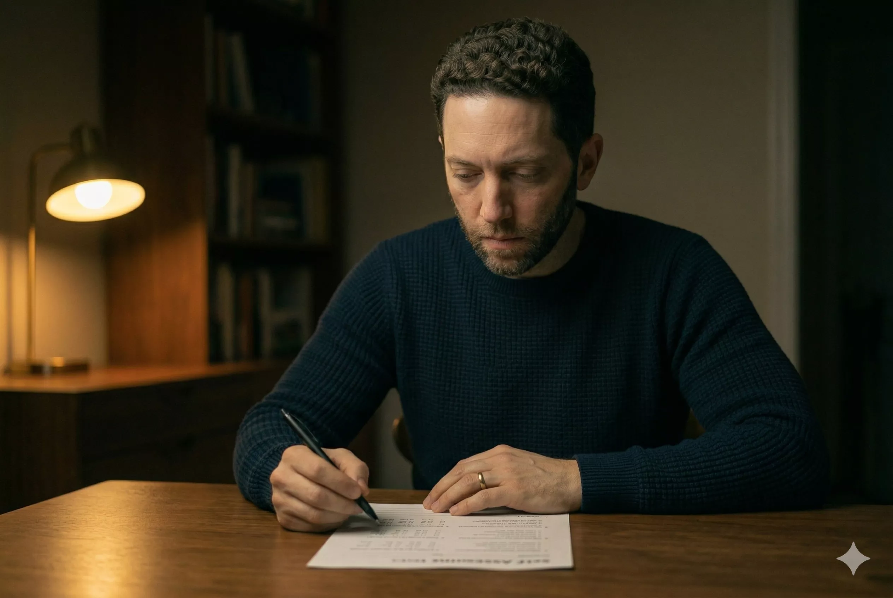
The DAR-5 (Dimensions of Anger Reactions) is a brief validated screening tool used in clinical settings to identify the scope and impact of anger in a person's life. It is used at the midpoint of this program as a reflective baseline — and repeated later to measure change. This is not a diagnostic tool. Scores do not constitute a diagnosis. They provide information to help you calibrate the intensity of your focus in this program.
A high score is not a verdict. It is a signal. If your DAR-5 score is 12 or above, this program is a valuable companion — but it is not enough on its own. Please consider working with a licensed mental health professional who specialises in trauma-informed anger management. That referral is a sign of wisdom, not weakness.
Rate each statement: 1 = Not at all / 2 = A little / 3 = Moderately / 4 = A great deal
1. I have felt angry, irritable, or short-tempered.
2. My anger has been more intense than the situation warranted.
3. My anger has lasted longer than expected — it was hard to let go.
4. My anger has negatively affected people important to me.
5. My anger has interfered with my work, relationships, or daily life.
This tool is adapted from the DAR-5 (Dimensions of Anger Reactions — 5 item version). It is used here for educational reflection only, not clinical diagnosis. If your score concerns you, please consult a licensed mental health professional.
Jordan is frustrated. "I apologised. I'm working on this. Why doesn't Sam just trust me again?" A spiritual counsellor, Brother Ellis, has joined the session at Jordan's request. He sets down his pen. "Jordan — can I ask you to separate two things that people almost always confuse?"
Forgiveness and trust are two entirely different processes. Forgiveness is a gift you give yourself — it releases you from carrying the weight of bitterness. Trust is something that must be demonstrated through behaviour and calibrated by the person who was harmed. Confusing the two leads to either endless resentment or naïve vulnerability. Hold both clearly.
CBT-based anger management frameworks consistently distinguish forgiveness from reconciliation or restored trust. Forgiveness is defined as a voluntary internal process — the decision to release resentment, grievance, and the desire for retribution — independent of whether the other person has changed or whether the relationship resumes. Research consistently shows that forgiveness reduces anger rumination and physiological arousal over time.
Trust, by contrast, is an assessment based on observed behaviour. It is rebuilt through a track record — consistent new behaviour across multiple situations over meaningful time. Demanding trust from someone you have harmed, before demonstrating sustained change, is not a relational repair skill — it is an escalation tactic. The clinical goal is to become trustworthy, not to extract trust.
"Forgiveness is a process of reducing resentment toward an offender. It is distinct from condoning, excusing, forgetting, or reconciling — all of which involve the other party. Forgiveness is internal and personal."
Think about a relationship currently affected by your anger — with Sam, a family member, or a colleague:
Dr. Patel has given Jordan a new instruction. "This week I want you to deliberately expose yourself to a mild annoyance — something that normally triggers a small storm response — and practise the full toolkit. Not a 9-out-of-10 situation. A 3. Maybe a 4." Jordan looks uncertain. "Why start easy?" "Because your nervous system needs to know the skills work when it's calm — before it can trust them when it's not."
The anger toolkit you have built only works if your nervous system has experienced it working. Practice in mild situations is how you wire the skills in. When a real 8-out-of-10 arrives, your system can draw on actual successful experiences rather than theory. Every mild trigger you practise on becomes a deposit in the bank that the hard situations draw from.
Stress Inoculation Training (SIT), developed by Dr. Donald Meichenbaum and applied to anger management by Dr. Raymond Novaco, is a structured CBT approach that progressively exposes the person to anger-provoking stimuli while deploying rehearsed cognitive and behavioural coping skills. The rationale is direct: skills that have never been practised under any arousal do not transfer to high-arousal situations.
Graded exposure begins with low-intensity triggers, allowing the person to experience successful skill deployment. As competence builds, the intensity of the practice scenarios is progressively increased. The result is that the coping skills become increasingly accessible across the full range of anger-provoking situations — not just theoretical tools that collapse under real pressure.
"Stress inoculation training provides individuals with skills to cope with stress before they encounter the actual stressor — building tolerance and competence through graduated practice."
Build your personal exposure ladder. Start with the mildest trigger situation and work toward harder ones:
Dr. Patel has Jordan practise out loud. "Say it to me. The actual words." Jordan hesitates. "You're hedging," Dr. Patel says. "That hedge is what makes it passive. No apology before the sentence. Just the sentence."
Two errors undermine assertiveness: hedging (beginning with an apology that signals you don't believe your own need is valid) and escalating (increasing intensity when the first statement is not immediately received). Say it once, clearly, calmly. Wait. Let the other person respond.
The SAMHSA anger management manual identifies assertiveness training as a core skill — expressing thoughts, feelings, and beliefs directly, honestly, and appropriately without violating the rights of others. Two critical application rules: no hedge phrases before the statement ("I'm sorry to bring this up, but…") and no escalation if not immediately received. State it once, calmly and firmly, then allow the other person to respond.
"Assertive behaviour involves standing up for personal rights and expressing thoughts, feelings, and beliefs in direct, honest, and appropriate ways that do not violate the rights of others."
Write your assertive response for each scenario using the When / I Feel / I Need formula:
Jordan's phone buzzes. A message from Sam that lands badly. The finger moves toward the reply. The words are sharp. And they are being written at a storm level of 8.
Digital communication removes every natural dampener. The 24-hour rule is one of the most powerful anger tools you have — because the medium itself amplifies the storm. Most drafts written at a storm level of 8 are not sent — they are deleted the next morning, and the relationship is preserved.
Write your personal digital anger rules so they are ready before the next incoming message:
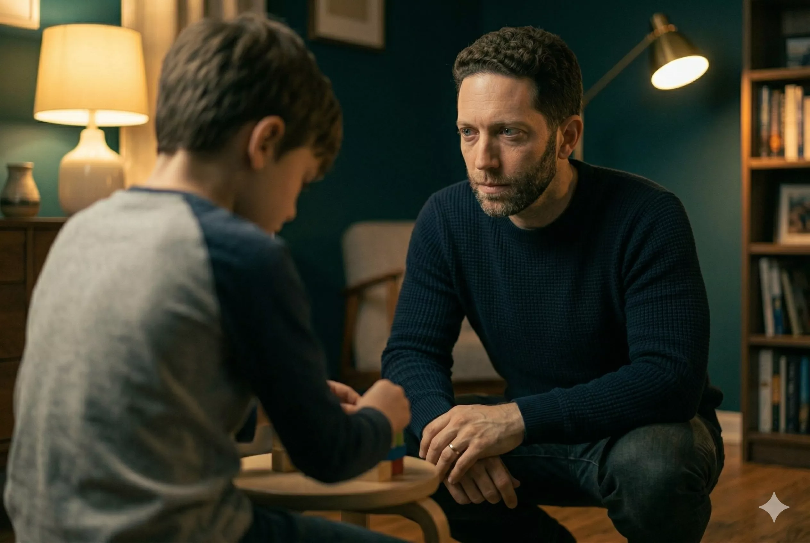
Jordan snapped at a child over something small. The child has gone quiet. Jordan stands in the hallway, feeling the shame spiral. Dr. Patel's voice: "Co-regulate first. Then repair."
The child is watching how you handle your mistakes, not just your anger. A parent who repairs well teaches their child that mistakes can be owned and relationships can survive rupture. That lesson is worth more than any lecture about anger.
Write your personal parenting repair script — the actual words you will use:
The manager has dismissed Jordan's contribution in a meeting. Jordan's hands press under the table. The old script is right there: "You always do this." But Jordan pauses. Breathes. Waits until after the meeting.
Two workplace rules: always delay your response until after the triggering event — in-the-moment reactions carry professional consequences that home arguments do not. Keep the conversation to the specific behaviour — never the person's character. "When this happened" not "You are the kind of person who."
Write your own scripts for the two workplace triggers most relevant to you:
Dr. Patel puts a diagram on the table. "Jordan — your anger is not a character flaw. It is a coordinated physiological event. Understanding that chain is how you interrupt it with precision rather than willpower alone."
The most important physiological fact in this program: after a full anger activation, it takes 20 to 30 minutes for cortisol and adrenaline to clear. Even after you feel "calm," your nervous system is still primed. The 20-minute rule for any significant decision or conversation after anger is not overcaution. It is basic physiology.
"Anger is a coordinated response tendency — with physiological, experiential, and behavioural components. Understanding the physiological component is essential to effective anger regulation."
Map your own body signals — these become your early warning system:
Jordan has been "keeping it together" for weeks. No outbursts. Jaw tight. Sleep shallow. Then — a small thing at dinner, a tone in Sam's voice — and Jordan is at a 9 from nowhere. Sam looks startled. "Where did that come from?" Jordan doesn't know. Benne does.
Suppression and regulation look identical from the outside — both are quiet. But inside, they are opposites. Suppression is pressure building. Regulation is pressure releasing gradually through skill. The difference shows up in the explosion that eventually comes from one, and the steady calm that eventually comes from the other.
Dr. James Gross's process model distinguishes antecedent-focused strategies (reappraisal, attention shifting — they act before the emotion peaks) from response-focused strategies (suppression — it acts after the physiological anger has already fired, attempting to modulate the outward expression without reducing the inner arousal). Research consistently shows that suppression increases physiological arousal, impairs cognitive performance, and strains relationships. Reappraisal, by contrast, reduces both subjective experience and physiological response.
"Suppression involves inhibiting ongoing emotion-expressive behaviour. It reduces expressive behaviour but fails to reduce emotional experience and may increase physiological responding."
Dr. Patel plays back something Jordan said in the previous session — describing a recent argument with Sam. Jordan had mimicked Sam's voice. Called the concern "ridiculous." Rolled their eyes. "I want to slow down here," Dr. Patel says quietly. "What I just heard was not anger. It was contempt. And those are not the same thing."
Every other form of conflict still contains an implicit invitation: I want us to resolve this. Contempt withdraws that invitation. It communicates that the other person is not worth the effort of genuine engagement. This is why Gottman calls it the most corrosive of the four horsemen — it does not damage the relationship the way a storm does. It erodes it the way acid does. Slowly. Without heat.
Criticism attacks the person's character. Defensiveness counters a complaint with a complaint. Stonewalling withdraws from interaction. Contempt is the most damaging — it communicates moral superiority over the other person, expressed through eye-rolling, mockery, mimicry, sarcasm, and dismissiveness. The diagnostic question is posture: are you expressing hurt and wanting resolution? Or communicating that the other person is beneath your serious consideration?
"Contempt — the sense that your partner is inferior or unworthy — is the single greatest predictor of relationship failure in our research."
Benne sits with Jordan late in the evening. The argument with Sam from this afternoon feels enormous — permanent, defining. Benne says one thing: "Climb the ladder with me for a moment."
Anger narrows time — it makes the present moment feel permanent and total. The time perspective question is a cognitive crowbar that pries that narrowing open. It does not dismiss the feeling. It asks: how much of this storm is being fuelled by the illusion that this moment will always feel this way? Almost always, the answer changes what the right response is.
Temporal reappraisal is a variant of cognitive reappraisal — deliberately shifting perspective to a future timepoint to reassess the significance of a current stressor. Research confirms that strategies shifting temporal context reliably reduce negative affect and physiological arousal, functioning as antecedent emotion-regulation. Peak anger involves a distortion of temporal significance — the current event feels permanent and uniquely defining. The "will this matter in five years" question applies a temporal lens that restores proportion. This is not minimisation — genuine injuries do persist. It is calibration of urgency and response, not denial of hurt.
"Cognitive reappraisal — changing the way one thinks about a situation — is one of the most effective strategies for regulating negative emotion, reducing both the subjective experience and the physiological response."
Brother Ellis brings a leather-bound journal and sets it in front of Jordan. "I want you to start writing three things every evening. Not achievements. Not things that went perfectly. Three things — anything — that you are genuinely grateful for. However small." Jordan almost laughs. "That sounds like a greeting card." Brother Ellis doesn't smile. "It sounds that way because the results are hard to believe until you experience them."
Gratitude practice does not make you ignore problems. It recalibrates the ratio of your attention — so the threat-detection system, which by default runs at five-to-one, starts to operate at a more proportional ratio. When your brain has daily practice noticing what is good, it is less easily hijacked by threat signals — and the anger becomes less automatic.
Dr. Robert Emmons and Dr. Michael McCullough's landmark research found that participants who wrote about things they were grateful for showed significantly higher wellbeing, fewer physical complaints, and more positive affect compared to control groups. The neurological mechanism involves attentional retraining: the brain's negativity bias gives approximately five times more weight to negative stimuli than positive. Deliberate, regular gratitude practice builds a counterbalancing attentional habit that reduces the bias's dominance over daily emotional tone — including anger baseline.
"Gratitude practice generates a heightened sense of wellbeing. Those who kept gratitude journals on a weekly basis exercised more regularly, reported fewer physical complaints, and felt better about their lives as a whole."
Benne invites Jordan into an uncomfortable exercise. "Think of the person you are most angry at right now. Hold them in your mind." Jordan does. "Now consider — not excuse, not forgive, not agree with — just consider: what are they carrying? What have they been through? What are they afraid of that makes them act this way?"
Compassion is not agreement, not weakness, not pretending the harm did not happen. Compassion is the deliberate act of remembering that the person in front of you is also human — also afraid, also scarred, also struggling. Research consistently shows this act reduces physiological anger arousal — not because it excuses anything, but because it restores full humanity to a situation where anger had reduced the other person to the source of threat.
Dr. Kristin Neff's framework identifies three components: self-kindness (treating oneself as one would treat a good friend), common humanity (recognising that suffering is a shared human experience rather than an isolating personal failing), and mindful awareness (holding difficult feelings in balance rather than suppressing or over-identifying). Applied outward as other-compassion, this restores the full human context of the person who triggered you — which reliably reduces the intensity of the anger response.
"With self-compassion, we give ourselves the same kindness and care we'd give to a good friend. The three components — self-kindness, common humanity, and mindfulness — work together to generate a more compassionate stance toward oneself and others."
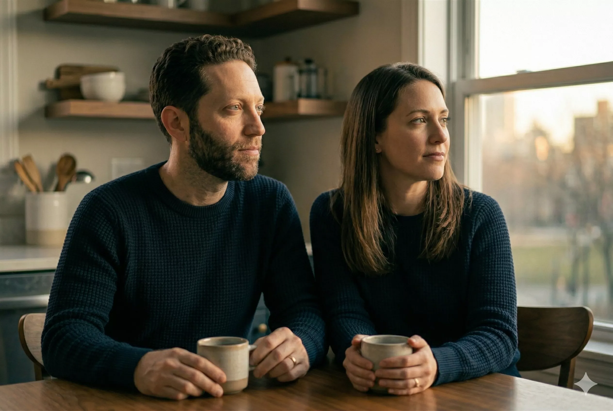
Benne introduces a concept Jordan has not heard before. "We have talked about repair attempts — small things that interrupt negative momentum. Now we are going to build something more intentional. A ritual. A fixed sequence of actions you both recognise as: this is what we do when the storm has passed and we are coming back to each other."
The gold in kintsugi is the care and deliberateness of the repair — it does not hide the break. It honours it. A relationship that has been broken and carefully repaired carries visible evidence of commitment in a way that a relationship that has never been tested cannot. The ritual is how the gold gets into the cracks.
Jordan is angry — but this time it feels different. Something genuinely unjust has happened. Not a cognitive distortion. An actual harm. "Is this wrong?" Jordan asks. Benne pauses before responding. "Yes. This is wrong. And the anger you feel is an appropriate response to something wrong. Now the question is: what do you do with it?"
Anger at genuine injustice is not a clinical symptom — it is a human and moral response. What becomes harmful is the response: misdirected at the wrong person, disproportionate to the actual harm, or prolonged into chronic resentment. The anger itself, in the presence of genuine injustice, is often exactly the right signal.
Dr. Raymond Novaco's anger theory explicitly accounts for justice-based anger — anger arising from genuine harm, injustice, or moral violation. This is distinguished from anger arising from frustration of ordinary desires or misappraisal of neutral events. Justice anger serves a functional purpose: it signals that something genuinely wrong has occurred and motivates corrective action. The clinical focus in these cases is not on reducing the anger itself, but on ensuring the response is directed at the actual source, proportional to the actual harm, and channelled into effective action rather than destructive expression.
"Anger has functional value — it is an important signal that something is wrong, motivates action to correct injustice, and communicates to others that one's needs and rights must be respected."
Brother Ellis asks Jordan to complete an exercise. "Write down — in a single sentence, with no qualifications and no 'but' — exactly what you did in the last major argument that was wrong." Jordan starts writing. Stops. Starts again. "Every time I try to write it, I want to add something that explains why." Brother Ellis nods. "That explanation is what keeps ownership incomplete. Try again. Just the action. Just the acknowledgement. Nothing after the period."
Full ownership is one of the most disarming things a human being can offer another. It disarms defensiveness and contempt. It works precisely because it is rare. Most people never fully own anything. When you do — without qualification, without the "but" — the effect on the other person is almost always immediate and significant.
CBT and DBT frameworks for accountability consistently identify the same failure mode in incomplete apologies: the qualifying clause that relocates responsibility. Full ownership follows a simple standard: specific behaviour + direct acknowledgement + period. No qualifier, no contextualising clause, no explanation. The explanation may be genuinely important — but it belongs in the repair conversation that follows, not in the ownership sentence itself. Keeping them separate means the ownership sentence carries its full weight.
Brother Ellis closes his notebook at the end of the session. "Jordan, I want to ask you something. Who in your life — outside of Sam, outside of Dr. Patel, outside of me — can you tell the truth to about your anger? Someone who will not flatter you and will not condemn you. Someone who will say 'that was wrong' when it was, and 'that was real progress' when it is?"
An accountability partner is not a confessor, not a therapist, not a judge. They are a trusted person who has agreed to hold your commitments alongside you — who asks the honest question, hears the honest answer, and responds without flattery or condemnation. The greatest value they provide is the view they cannot provide to themselves: the outside view.
Research on behaviour change maintenance consistently identifies social support as one of the strongest predictors of long-term success. In anger management specifically, participants who maintain a trusted accountability relationship show significantly better outcomes at six-month follow-up than those working independently. The partner provides external monitoring that supplements incomplete self-monitoring, non-defensive feedback the person cannot provide for themselves, and a relational stake in the commitment that makes regression more socially costly.
Jordan and Sam are in Dr. Patel's office together for the first time. They are not reconciled. But they are here. Dr. Patel places a single sheet between them. "This is not a peace treaty. You are not being asked to pretend nothing happened. You are being asked to agree on one thing: a structure for what happens when the next storm comes. Because there will be a next storm."
The time-out contract works because it removes the decision in the moment. When you are at a storm level of 7, you do not have to decide whether to take space — you already decided, in calmer water, together. The contract makes the de-escalation automatic. It also removes the interpretation: Sam knows Jordan is not running away. Jordan knows Sam will not see the signal as abandonment. The agreement pre-answers those fears.
The structured time-out is a core SAMHSA anger management component. It differs from unilateral withdrawal in three critical ways: it is mutually agreed in advance (not a unilateral decision in the moment), it includes a commitment to return at a specific time (preventing abandonment fears), and it specifies what the person will do during the time-out (preventing rumination, which extends physiological arousal). The 20-minute minimum reflects the cortisol clearance window covered in M40.
Phase 4 begins next: Repair & Rebuild — the relational reconstruction work, where the tools you have built begin to change the patterns between you and the people who matter most.
Dr. Patel pulls up a recording of Jordan and Sam's last conversation — one they agreed could be reviewed. The first sentence Jordan said was: "You never pay attention to what I actually need." Dr. Patel pauses it there. "Before we go any further — what do you notice about how that conversation began?"
The soft start-up formula is three moves: When [specific observable situation], I feel [honest emotion], and I need [specific, positive request]. Notice what is absent: blame, character judgement, "always," "never," and the accusatory "you." You are describing your internal experience, not rendering a verdict on the other person. That distinction is what keeps the door open.
Gottman's longitudinal research found that how a conversation begins predicts its outcome with over 90% accuracy. A harsh start-up — blame, contempt, criticism, sarcasm in the opening seconds — activates the other person's defensive threat response immediately, and that physiological activation persists through the conversation regardless of content. A soft start-up deactivates the threat response before it fires, creating the neurological conditions in which collaborative problem-solving is actually possible.
The structural formula: (1) Describe the situation without blame. (2) Name your feeling — using "I", not "you make me feel." (3) Make a positive, specific request — what you need, not what you want them to stop doing. "I need more help with the children in the evenings" rather than "You never help."
"Discussions that begin harshly almost invariably end that way, too. In contrast, a gentle start-up predicts a productive conversation and successful repair."
Take a real concern and convert a hard start-up to a soft one:
Benne runs an exercise with Jordan. "I am going to say something to you — something Sam might say. And I want you to do one thing before you respond: tell me back what you heard, in your own words. Not agree with it. Not rebut it. Just reflect what you heard, and check if you have it right." Benne speaks. Jordan listens. Then pauses longer than usual before speaking. "So what I hear is... you feel like I'm not present even when I'm physically here. Is that right?" Benne nods. "That is the skill."
The sequence matters exactly: listen, reflect, check, receive correction if needed, then respond. Most people skip to step four — the response — and wonder why the conversation deteriorates. The reflection step is not a delay tactic. It is the act that makes the other person's nervous system safe enough to actually hear what comes next.
Reflective listening — systematically summarising what you hear before responding — is a core skill in both CBT and DBT couples work. The mechanism is neurological: when a person feels genuinely heard, their threat-processing system (amygdala activation) de-escalates. This de-escalation is physiologically measurable and precedes the cognitive capacity for collaborative problem-solving. Responding before the other person feels heard bypasses this de-escalation, meaning both people remain in threat mode through the conversation.
"Most people do not listen with the intent to understand; they listen with the intent to reply. Seek first to understand, then to be understood."
Write your versions of these reflective phrases in your own natural voice:
Dr. Patel draws a diagram on a whiteboard. "Most couples approach conflict like this." She draws two people facing each other, a problem between them. "You are aimed at each other, and the problem is the weapon. Now watch." She draws the people side by side, the problem opposite them both. "The same problem — different geometry. You are on the same team. The problem is across the table. This small shift changes everything."
The "us vs the problem" frame is deceptively simple and surprisingly powerful. When you both look in the same direction — at the challenge — rather than at each other — through the challenge — your nervous systems shift from competitive to collaborative. Collaborative physiology produces different thinking than competitive physiology. You actually generate better solutions when you are not defending yourself.
Collaborative problem-solving is a structured CBT approach that externalises the problem — treating it as an entity separate from either person — and directs both parties' cognitive resources toward it rather than toward each other. The five-step structure (define, generate, evaluate, choose, review) provides a predictable process that prevents both people from reverting to accusation when options conflict. The generative step — producing options without judging them — is clinically critical: premature evaluation shuts down creative solution generation and reactivates the adversarial frame.
Benne poses a question Jordan has not considered. "How many of your biggest arguments began with one of you bringing up something important at a terrible moment — while the other was tired, distracted, already stressed about something else?" Jordan pauses. "Almost all of them." Benne: "That is the problem the conflict ritual solves. Not the content of the conflict. The timing and the container."
The conflict ritual gives the conversation a container — a defined start, structure, and end. One of the most damaging patterns in relationships is the conversation that never really ends — it just goes underground and resurfaces later, angrier. The ritual's closing step — "the conversation is closed" — prevents re-opening. You can schedule a follow-up. But this conversation is done.
Research on conflict management in couples consistently shows that unstructured conflict — ambush timing, undefined duration, topic-drift — produces worse outcomes than structured conflict regardless of communication skill. The conflict ritual addresses three known destabilisers: (1) the ambush effect, where being caught off-guard activates defensive threat response; (2) topic-drift, where unresolved grievances pile onto the current conflict; and (3) the absence of a clear endpoint, which creates rumination between conversations. Structure is not avoidance — it is the container that makes genuine resolution possible.
Jordan is back at work. The anger management tools are building at home — but the workplace is a different arena. Different power dynamics, different norms, less safety to express. A decision was made over Jordan's head again. The familiar heat rises. Benne sits with Jordan after the shift. "Tell me what happened. And tell me what you actually said."
The workplace suppression cycle — quiet resentment at work, explosion at home — is one of the most common patterns that brings people to this program. The anger doesn't know the difference between your manager and Sam. It accumulates in the same body. Assertive professional expression is not just a career skill. It is a relationship protection strategy.
Assertive communication in professional contexts follows a structure: (1) Name the situation factually (no emotional charge). (2) State the impact or concern (first-person). (3) Make a specific request or propose a solution. (4) Invite dialogue. Example: "The project timeline was adjusted without input from my team. This creates a delivery risk I want to flag. Could we schedule a brief review?" — four sentences that carry the same weight as an explosion, without the professional cost.
Choose three workplace situations where your anger has been highest. Write your assertive script for each:
Sam sends a message at 10pm. Jordan reads it. Stops. The storm level rises in real time — Jordan can feel it moving from a 4 to a 7 in ten seconds. The thumbs hover over the keyboard. Benne's voice surfaces from somewhere: "The message will still be there in twenty minutes."
The second digital delay module builds on the first by adding two new skills: channel selection (recognising when a message-based exchange has escalated past what text can handle, and moving it to voice or in-person), and the draft-and-review practice (writing the angry response, saving it as a draft, reading it after 20 minutes, then deciding whether to send, revise, or delete it).
Text-based communication systematically removes the social cues that normally regulate interpersonal conflict: facial expression, vocal tone, physical posture, real-time feedback. Without these cues, negative interpretations are over-applied (the brain defaults to threat-reading), and the escalation speed is dramatically higher than in face-to-face interaction. The digital delay protocol rebuilds the regulatory window that text communication removes — inserting the physiological recovery period that face-to-face conversation provides automatically.
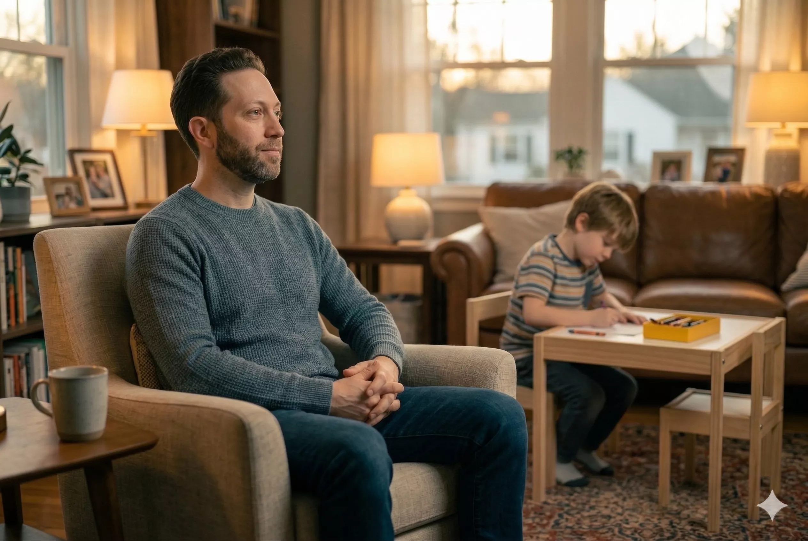
Jordan came home at a 6 and the children were loud. The familiar flash — louder than needed, sharper than fair. One child goes quiet. Jordan sees it: the familiar withdrawal. And knows immediately what just happened. "I made them afraid." Benne doesn't rush past it. "What you did next matters as much as what you did."
The most powerful parenting tool in this program is not technique — it is transparency. When you say "I was angry and I got it wrong and here is what I should have done differently," you give your child a map for the rest of their life. You do not have to be the parent who never loses their temper. You need to be the parent who shows them what to do when you do.
Gottman's emotion coaching model identifies five components of anger-healthy parenting: (1) being aware of your own emotional state before engaging with the child's behaviour; (2) treating the child's anger as an opportunity, not a problem to eliminate; (3) validating the child's feeling even while redirecting the behaviour; (4) helping the child name what they are feeling; (5) problem-solving together after regulation — not during. The single most predictive factor for children's long-term emotional regulation is whether their caregivers modelled it openly.
Jordan has not spoken properly to a sibling in over a year. The most recent argument was about something specific — but what fuelled it was decades of accumulated grievance: old roles from childhood, old patterns of dismissal, old unhealed moments that neither of them has ever named. Benne: "What is the argument on the surface? And what is the argument underneath?"
Long-term peer and sibling relationships carry something that new relationships do not: a shared memory that is also a shared wound. The skills from this program apply — but they must be applied to both the surface conflict and the deeper layer. The deeper layer does not need to be fully resolved before the relationship can improve. It needs to be acknowledged — by you first, then in the relationship when the other person is ready.
Old conflict in sibling and peer relationships operates on two layers simultaneously. Layer 1 is the presenting incident — the immediate trigger. Layer 2 is the accumulated historical charge — old grievances, old roles, old wounds that were never addressed. Standard conflict resolution applied only to Layer 1 will fail, because the emotional energy flooding the conversation comes from Layer 2. The clinical approach: (1) Name Layer 2 to yourself first. (2) Acknowledge it exists when addressing the other person. (3) Work on Layer 1 with that acknowledgement present. (4) Keep Layer 2 work for a separate, dedicated conversation — not bundled with the immediate incident.
Dr. Patel raises something Jordan has not yet confronted directly. "Some of the anger responses that come fastest, and feel largest, have roots older than this relationship. Older than Sam. When you are triggered in a particular way — something in the tone, something in the body language — the response that floods through is not just about this moment. It is about a much older moment that this one is echoing."
This module is not about resolving trauma — that is work for a specialised therapist. This module is about recognising trauma's presence in your communication and making four specific adjustments that reduce its ability to derail the conversation. You cannot always see which moment triggered the old memory. But you can learn to read the flooding signs — in yourself and in Sam — and create a safer container for what comes up.
Trauma responses — particularly those involving threat appraisal — amplify anger triggers by attaching present-moment stimuli to past-stored threat memories. A tone of voice, a physical gesture, a particular phrase can activate a full trauma response through conditioned association, producing an anger level that is disproportionate to the present stimulus. This is not irrationality — it is neurologically accurate survival response to a perceived threat that the brain has filed under a known category of harm. Trauma-aware communication adjusts the physical and conversational conditions to reduce the likelihood of these conditioned responses firing.
Benne sits with Jordan for the second formal measurement. "You completed this at the start of Phase 3. Now we are going to do it again — not to judge the number, but to see the direction. Progress in anger management is not linear. There will be weeks that look worse than the week before. What matters over ten modules, over twenty modules, is the trend." Jordan picks up the assessment. Reads the first statement. And pauses. Something is different. The statement doesn't hit the same way it did before.
The DAR-5 is a compass, not a verdict. What you are measuring is the direction of travel — not whether you have arrived. Four phases of work later, you know things about anger you did not know before. You have skills you did not have before. Some of them will feel natural by now. Some will still require conscious effort. Both are correct. Both are progress.
Phase 5 begins next: Maintain the Ground — the long-game work of consolidating what you have built, managing relapse, and living with the skills you have earned.
Benne sits across from Jordan with something different in his manner — less teacher, more companion. "You have built the tools. Now we are in the part of the work that most programs skip — maintaining what you have built when life makes that hard. And it will make that hard. Not because you are doing it wrong. Because that is what life does." He slides a blank sheet of paper forward. "We are going to write your plan. For when things go wrong."
The relapse prevention plan is written in calm water — for when the water is not calm. When you are at a storm level of 8, you cannot write a good plan. You can only execute one that already exists. The plan is the bridge your regulated self builds today for your future dysregulated self to cross.
Relapse prevention theory, developed by G. Alan Marlatt and Judith Gordon, identifies that lapses — single episodes of the unwanted behaviour — are nearly universal in behaviour change and need not become relapses if managed correctly. The key variable is the person's response to the lapse: those who interpret a lapse as total failure (the abstinence violation effect) relapse at significantly higher rates than those who treat it as information — a signal that a high-risk situation was encountered and the plan needs adjustment. A written plan changes the response from shame-driven withdrawal to problem-solving activation.
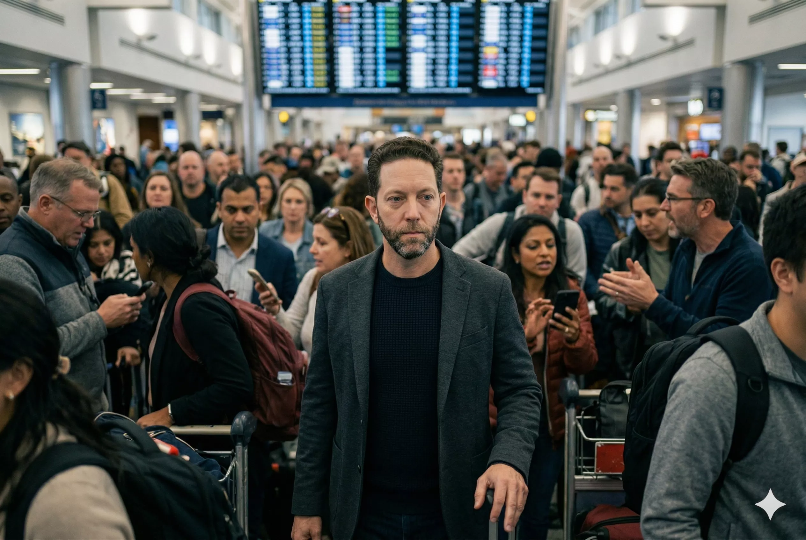
Dr. Patel pulls up Jordan's session notes from the past four phases. "There is a pattern in here. Every major episode you have reported has happened within two days of a particular set of conditions. You are almost never at a high storm level at random — there is always a context." She underlines four words. Jordan reads them. Recognises them immediately. "This is my profile."
The fastest high-risk self-check in any moment is HALT: Am I Hungry? Am I Angry about something else already? Am I Lonely or disconnected? Am I Tired? If any of these is yes and you are about to enter a difficult conversation — stop. Address the HALT condition first. A person who is hungry, tired, and already frustrated is physiologically incapable of the careful communication this program has taught.
Marlatt's relapse prevention model identifies specific high-risk situations as the primary precipitants of relapse: negative emotional states, interpersonal conflict, and social pressure account for the majority of lapses. Individual high-risk profiles are highly personal but map onto predictable categories. Anticipating high-risk situations and pre-planning responses — rather than relying on in-the-moment willpower — is one of the most evidence-supported components of long-term behaviour change maintenance.
Benne asks Jordan to think back over every major anger episode in the past four months. "Before the explosion — not during it, not after — what were the signs? What did your body do? What did your behaviour look like to people around you? What did your thoughts start doing?" Jordan thinks. Starts listing. Pauses at one item. "I get impatient in traffic. Not just once — it's three or four days in a row before something big happens."
Your early warning signs are personal and specific — they will not be exactly the same as anyone else's. But once you have identified yours, they become one of the most valuable tools in this program. Warning signs give you lead time. Lead time gives you choice. And choice is everything.
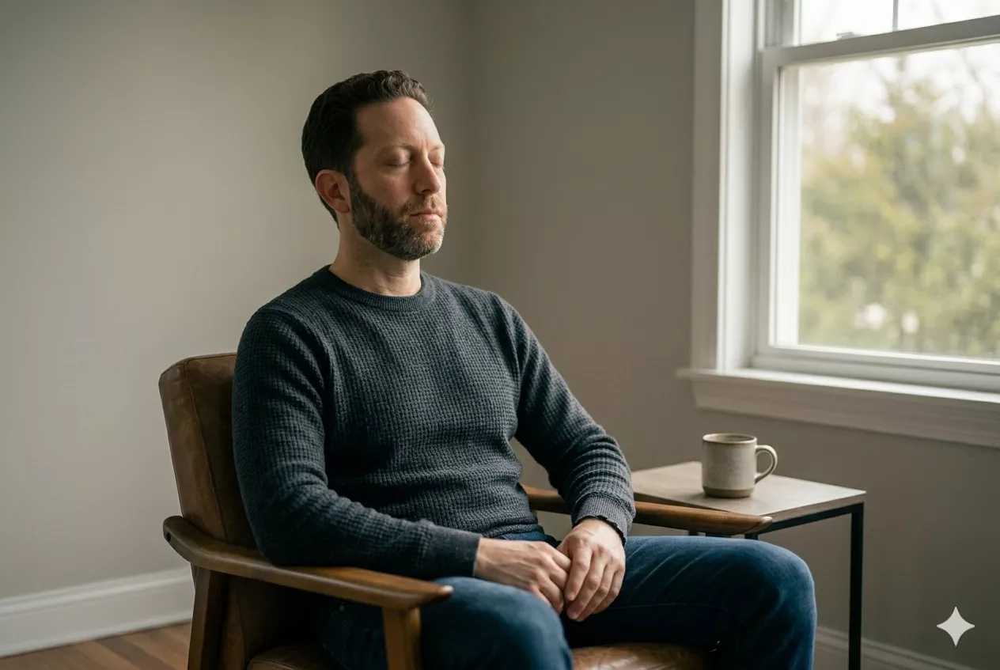
Benne draws a simple diagram. A horizontal line — the anger threshold. Below it: pressure building. "The trigger that sets you off is not the problem. The problem is how much pressure was already in the system before the trigger arrived. When you are chronically stressed, the threshold comes down to meet you. The same comment from Sam that you handle easily on a calm Tuesday will set off a storm on a high-stress Friday."
There are three stress reduction approaches that are evidence-supported and accessible: physical (regular aerobic movement lowers cortisol baseline), psychological (scheduled worry time — containing anxiety to a fixed period rather than letting it run all day), and social (genuine connection with safe people, not venting but real contact). All three work synergistically — and all three are in the next three screens.
Chronic stress maintains elevated cortisol and reduced prefrontal cortical function — the same neurological profile that makes anger regulation difficult. When chronic stress is sustained over weeks, the anger threshold drops measurably: stimuli that would normally be processed as minor irritants are appraised as significant threats. This is not a character problem — it is a physiological state. Reducing chronic stress restores the threshold, which means fewer anger episodes without directly targeting anger at all. In this sense, stress management is the most efficient form of long-term anger management available.
Benne says something Jordan has not expected. "I want to talk about your sleep." Jordan: "I thought this was anger management." Benne: "It is. Sleep deprivation produces neurological changes that are clinically indistinguishable from anger dysregulation. The same amygdala reactivity, the same prefrontal cortical suppression, the same threat-appraisal distortion. A chronically under-slept person is running the same physiological programme as a person in a chronic anger state. This is not metaphor. It is biology."
The three most impactful sleep hygiene changes for anger management are: consistent sleep timing (same bed and wake time every day), screen elimination sixty minutes before sleep (blue light suppresses melatonin and elevates cortisol), and cooling the room (sleep quality increases measurably in cooler environments). Start with timing — it is the single highest-impact change and the hardest to resist ignoring.
Dr. Matthew Walker's neuroscience research established that sleep deprivation produces a 60% increase in amygdala reactivity — the structure most responsible for the anger threat response — while simultaneously reducing prefrontal inhibitory control. The result is an emotional brain that fires readily and a regulatory brain that cannot respond effectively. Critically, this neurological state is essentially identical to the state produced by chronic anger dysregulation — meaning poor sleep and anger dysregulation are not merely correlated; they share a common neural mechanism.
Benne speaks directly. "Physical movement is the most efficient cortisol-clearance mechanism available without medication. When you exercise aerobically — run, walk fast, cycle, swim, whatever raises your heart rate — you metabolise the stress hormones that would otherwise be converted into anger baseline. You are not expressing anger through exercise. You are removing its fuel."
Exercise also produces BDNF — brain-derived neurotrophic factor — which literally grows new neurons in the prefrontal cortex. The same structure responsible for inhibiting the amygdala's anger response. Regular aerobic exercise is not just cortisol clearance — it is a structural upgrade to your anger regulation hardware. Sustainably.
Dr. John Ratey's research on exercise and the brain demonstrates that aerobic exercise increases BDNF (brain-derived neurotrophic factor), which promotes neurogenesis — new neuron growth — particularly in the prefrontal cortex and hippocampus. The prefrontal cortex is the primary structure for top-down emotion regulation, including anger inhibition. Regular aerobic exercise therefore represents a structural investment in the brain's regulation capacity, not merely a temporary chemical effect. The evidence-supported minimum dose for psychological benefit is twenty minutes of elevated heart rate, three times per week.
Brother Ellis asks a question that catches Jordan off guard. "What did you eat today before this session?" Jordan thinks. Coffee at 7am. Nothing until 1pm. Another coffee. "And your storm level this afternoon when you arrived?" Jordan had been irritable all morning for no clear reason. Brother Ellis: "That is not a mood problem. That is a blood glucose problem presenting as a mood problem."
The nutritional angle of anger management is the one most people dismiss — and the one that produces some of the fastest results. You do not need a diet. You need three rules: eat breakfast, limit the sugar spikes that create crashes, and cut caffeine by early afternoon. These three changes alone will raise your anger threshold measurably within two weeks.
Benne asks Jordan to name everyone who is currently supporting this change. Jordan starts listing. Stops. Realises the list is shorter than expected. "I thought I had more people than this." Benne: "Most people do. The work of maintaining change in isolation is significantly harder than the same work with a structured network. The change is personal — but the support does not have to be."
The research on long-term behaviour change is consistent: people who maintain change over years almost always have a structured support network — not because they are weaker, but because sustained change is a social project, not merely a personal one. Build the network now, while things are improving, so it is already in place when the next difficult season arrives.
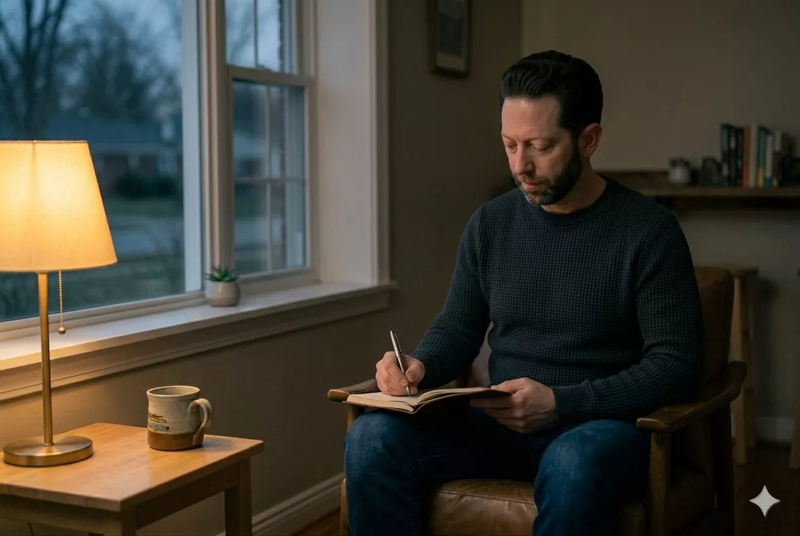
Brother Ellis speaks quietly. "Jordan, everything in this program — the tools, the skills, the exercises — these are instruments. They are valuable. But instruments require a hand that picks them up. And that hand requires something to sustain it when the work is hard and the progress is slow and the temptation to stop is real." He opens the book between them. "This is what I want to speak to you about today. Not technique. The root."
Research on religious and spiritual practice consistently shows reduced cortisol, lower systolic blood pressure, and improved emotional regulation outcomes compared to secular-only interventions. The mechanism appears to be a combination of community belonging, regular contemplative practice, and accountability to a framework of meaning beyond individual self-interest. The spiritual life is not separate from the clinical work. For many people, it is its deepest foundation.
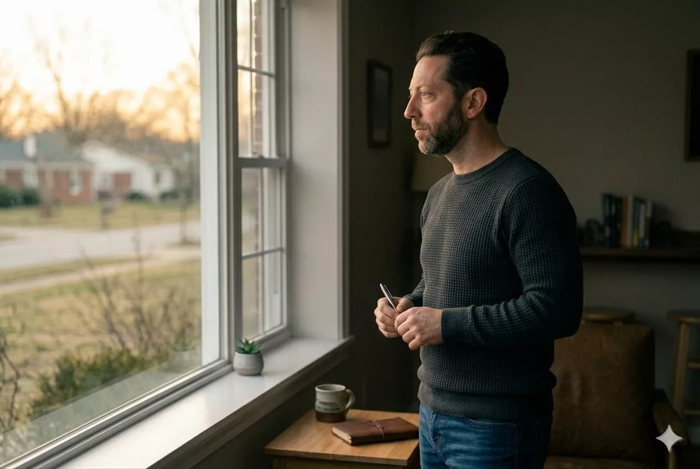
Benne, Dr. Patel, and Brother Ellis are all present for this session — rare, and Jordan understands why. Benne sets the DAR-5 down. "This is the same five questions you first answered before Phase 1. The same five you scored at Phase 3 and Phase 4. Today you will score them for the final time as part of this programme. Not to prove anything. To know where you stand."
You began this programme as someone who wanted to change and did not yet have the tools. You complete it as someone who has the tools and has begun building the habits. The gap between having tools and being changed is practice — ten thousand small choices, most of them invisible, most of them unremarkable. The unremarkable choices are where the real programme lives. You have taken the first step into that longer work.
"The storm is still in there. And so is the ground. You have built that ground — now you maintain it."
Jordan sits at the kitchen table, the programme journal open beside his laptop. He has scrolled back through his earlier check-ins — the raw scores from the first week, the spikes in Phase 2, the slow flattening of the curve. Benne pulls a chair across.
Your memory of anger is unreliable — it's designed to feel urgent in the moment and fade fast afterward. Measurement is how you hold yourself accountable to what actually happened, not just what you felt. Numbers are your ally, not your judge.
Self-monitoring is one of the most robust behavioural interventions in clinical psychology. Raymond W. Novaco, Ph.D., whose cognitive-behavioural anger treatment model underpins much of this programme, identified ongoing self-monitoring as a core maintenance component — without it, gains from structured intervention erode within months. The mechanism is attention: when we track something, we regulate it. Psychologists call this reactive self-monitoring, where the act of measuring a behaviour changes it. Research in emotion regulation by James J. Gross, Ph.D., supports the same conclusion: people who track their emotional states over time develop more accurate awareness of their regulation patterns and respond faster to early drift. In clinical terms, measurement is not evaluation — it is intervention.
"What gets measured gets managed — and what gets managed gets changed."
Dr. Patel sets a tablet in front of Jordan in her office. "Before we continue," she says, "I want to take a standardised measure. Not the DAR-5 — something with population norms, so you can see where you sit relative to the general public. This is the PROMIS Anger Short Form. Five items. Answer honestly."
This tool doesn't judge you — it gives you a reference point. Knowing your score relative to other adults is powerful information. Use it to understand where you started, and where you've arrived.
The PROMIS (Patient-Reported Outcomes Measurement Information System) was developed by the National Institutes of Health (NIH) and is maintained by the PROMIS Health Organization. The Anger Short Form is a 5-item subscale drawn from the PROMIS-29 profile, normed against a large representative sample of US adults (mean T-score = 50, standard deviation = 10). Items assess the frequency of angry mood, frustration, irritability, angry feelings toward others, and loss of control over temper — all in the past 7 days. Each item is rated on a 5-point scale from "Never" to "Always." Higher raw scores convert to higher T-scores, with scores at or above 60 indicating clinically elevated anger. The PROMIS Anger subscale has demonstrated strong internal consistency (α > 0.90) and convergent validity with established anger measures including the STAXI-2.
Rate each item for the past 7 days. 1 = Never | 2 = Rarely | 3 = Sometimes | 4 = Often | 5 = Always
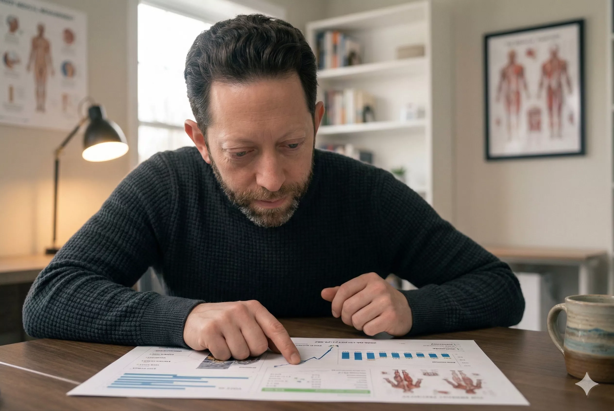
Jordan spreads his journal open on the kitchen table — Phase 1 DAR-5, Phase 4 score, Phase 5 final score side by side. Sam leans in from across the table, seeing the numbers for the first time. Jordan feels something unexpected: not pride exactly, but evidence.
A downward trend across your DAR-5 scores isn't just a number — it's proof of a different nervous system. You are not the same person who started Phase 1. The score arc is your evidence.
G. Alan Marlatt, Ph.D., whose relapse prevention model underpins Phase 5 of this programme, identified progress monitoring as one of four core maintenance behaviours. His research showed that clients who regularly reviewed their self-reported scores maintained treatment gains significantly longer than those who did not. The mechanism is twofold: reviewing scores reinforces identity consolidation ("I am someone who has changed") and provides early detection of drift before it becomes relapse. Raymond W. Novaco, Ph.D., similarly documented that in anger management programmes, score plateaus rather than continued declines are normal after Phase 3 — the goal of ongoing tracking is not to keep improving indefinitely, but to detect and respond to any upward movement before it re-establishes old patterns. A score that holds flat or gently declines is a maintenance success.
"Relapse is best understood as a process, not an event — and that process is visible in the data before it becomes behaviour."
Dr. Patel sets a printed chart on the table between them — two columns, State and Trait. "Most people confuse these," she says. "They think anger is anger. But the research distinguishes two very different things. One is the weather. One is the climate."
State anger is the fire that flares up. Trait anger is the amount of dry wood you carry every day. This programme has been working on reducing how much wood you carry. That's the deeper work — and it shows in the scores.
The State-Trait Anger Expression Inventory-2 (STAXI-2) was developed by Charles D. Spielberger, Ph.D., and is one of the most widely used validated anger instruments in clinical research and practice. Published by Psychological Assessment Resources (1999), the STAXI-2 assesses six dimensions: State Anger (current intensity), Trait Anger (dispositional tendency to experience anger), and four expression/control subscales — Anger Expression-In (suppression), Anger Expression-Out (externalised aggression), Anger Control-In (capacity to calm internally), and Anger Control-Out (capacity to prevent outward expression). Spielberger's research demonstrated that trait anger is a relatively stable personality characteristic that predicts cardiovascular reactivity, immune function, and relationship quality independent of situational provocation. Critically, trait anger can be modified through sustained cognitive-behavioural intervention — the effect size for anger management programmes on trait anger is approximately 0.70 to 0.80 in meta-analyses, indicating meaningful clinical change.
"Trait anger reflects individual differences in the frequency and intensity with which state anger is experienced over time."
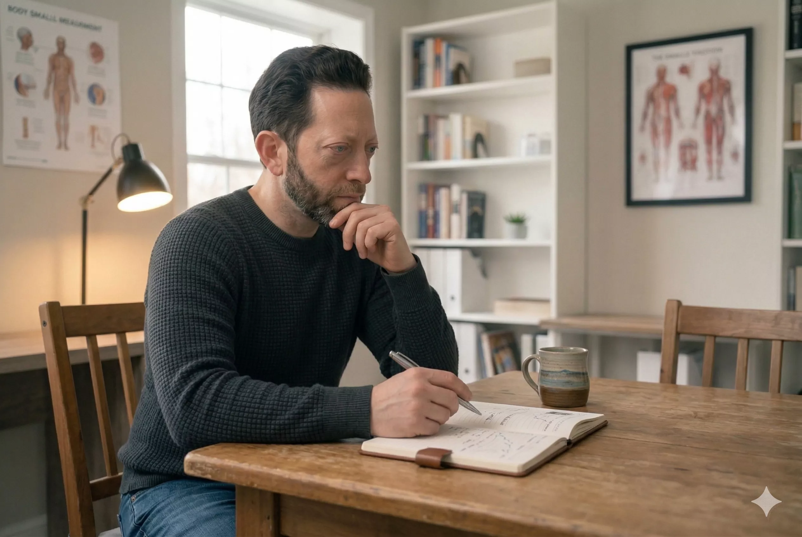
Jordan and Sam had a sharp exchange that morning — not a major blow-up, but enough to leave Jordan's chest tight and his jaw clenched. He looked at the clock when it started: 8:14. He looked again when he felt genuinely calm: 8:47. He wrote it down.
Your recovery window is a biological fingerprint. Tracking it over weeks reveals whether your nervous system is genuinely changing — or whether regulation is still hard work you have to force. Shorter times, less effort: that's the goal.
When an anger episode is triggered, the hypothalamic-pituitary-adrenal (HPA) axis releases adrenaline and cortisol. Adrenaline peaks within 5–10 minutes and clears relatively quickly, but cortisol — the sustained stress hormone — peaks at 20–30 minutes and may remain elevated for 60–90 minutes or longer in individuals with high trait anger. John M. Gottman, Ph.D., documented in his laboratory research that couples who re-engaged in conflict discussions while physiologically flooded (heart rate above approximately 100 bpm) consistently produced worse outcomes than those who waited for full baseline recovery. His team established a standard 20-minute minimum recovery period before re-entering difficult conversations. Tracking personal recovery time — the interval between peak anger and verified calm — is a precise metric of regulation skill development. Shortening recovery time is a direct, objective measure of nervous system change.
"Physiological soothing is not avoidance — it is the prerequisite for productive conversation."
It happened without thinking. Jordan was at a traffic light, the car behind him laying on the horn before the light had even changed, and his hand started the box breathing before he consciously decided to. He sat with that for a moment. He hadn't chosen it — it had simply happened.
The goal of all this work was never to try harder — it was to try less. A regulation habit means your brain has re-routed the default pathway. Skills that cost effort at week one now cost nothing. That's the finish line.
Charles Duhigg, in his widely-cited work on habit formation, described the three-component habit loop: cue, routine, and reward. When a behaviour is consistently paired with a specific cue and followed by a meaningful reward, the basal ganglia encodes it as automatic — bypassing the prefrontal deliberation that initially required effort. Roy F. Baumeister, Ph.D., whose research on self-control at Florida State University has been published extensively in peer-reviewed journals including the Journal of Personality and Social Psychology, demonstrated that self-control functions like a muscle — it depletes with repeated use in the short term but strengthens with sustained practice over time. His research further showed that individuals with the strongest self-control were not those who resisted temptation through willpower, but those who had structured their environments and habits so that fewer acts of conscious resistance were required. In anger management terms: the goal is not permanent vigilance, but permanent re-routing.
"People with good self-control… use it to establish better habits and routines, not to win repeated battles of willpower."
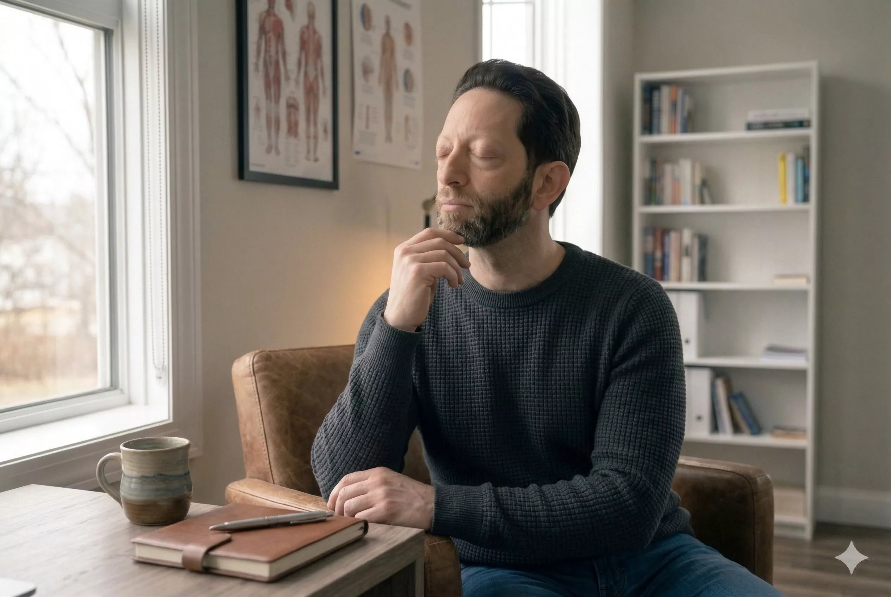
Jordan knows the conversation with his brother is coming — it has been overdue for months. He sits quietly the evening before, eyes closed, and walks through it in his mind: the setting, the moment it gets sharp, the breath he will take, the words he has chosen. He runs it three times.
Mental rehearsal isn't wishful thinking — it's deliberate practice. The brain cannot fully distinguish between a vividly imagined event and a real one, which means rehearsal builds the same neural pathways as live experience. Practice the version of yourself you want to be.
Mental rehearsal — also called imagery rehearsal or visualisation — has a substantial evidence base in sports psychology, surgical training, and clinical psychology. Neuroimaging studies demonstrate that vivid mental simulation of a skilled behaviour activates overlapping motor and prefrontal circuits to those engaged during actual performance. In the context of anger management, James J. Gross, Ph.D., has described anticipatory cognitive reappraisal as one of the most effective regulation strategies: appraising a likely stressor before it occurs, and mentally rehearsing the regulated response, significantly reduces emotional reactivity when the actual event takes place. This is distinct from avoidance — the person is not avoiding the conflict but pre-loading the neural resources needed to navigate it well. Research by Raymond W. Novaco, Ph.D., on anger inoculation training similarly showed that imagined exposure to anger-provoking scenarios, paired with rehearsed coping responses, produced durable reductions in reactive anger in clinical samples.
"Antecedent-focused strategies — deployed before emotion is fully activated — are more effective than response-focused strategies deployed after."
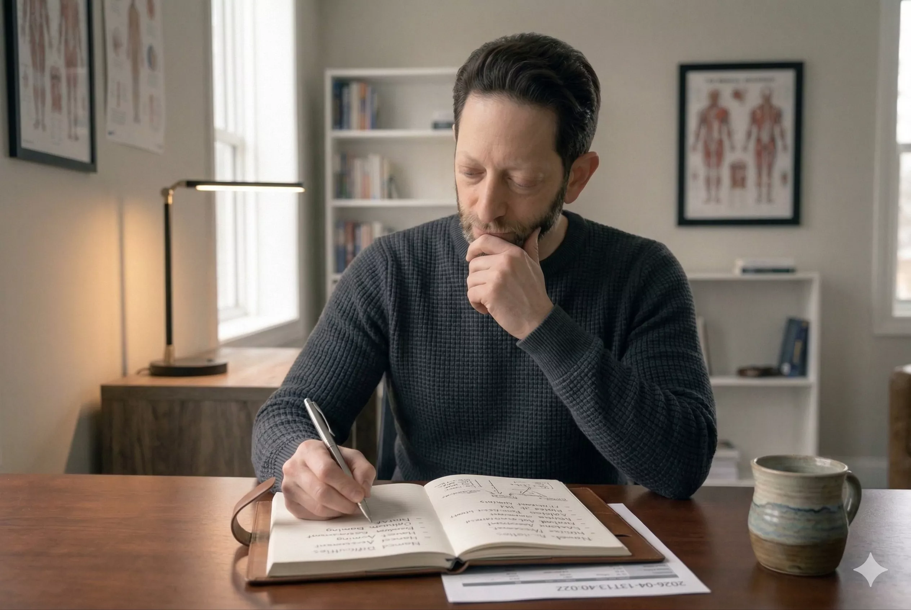
Benne spreads a blank sheet of paper on the table and writes three words: HIGH. MODERATE. MANAGED. "You built a relapse prevention plan in M61," he says. "Now we're going deeper — actually mapping the terrain. Where are the cliffs? Where are the safe paths?"
A relapse map is not pessimism — it is precision. The person who knows their cliff edges is far less likely to fall off them than the person who pretends cliffs don't exist. This map is your safety plan.
G. Alan Marlatt, Ph.D., developed the concept of high-risk situations as the cornerstone of relapse prevention theory. His research across multiple clinical populations identified that relapse rarely occurs from a single trigger but from the convergence of multiple risk factors — what he termed "covert antecedents" — that accumulate over time and erode the coping capacity of the individual. His relapse taxonomy identified three primary high-risk categories: negative emotional states (responsible for approximately 35% of relapses), interpersonal conflict (16%), and social pressure (20%). However, Marlatt also emphasised personal specificity: each individual's risk terrain is unique and must be mapped individually rather than assumed from general categories. The relapse prevention map operationalises this finding — converting abstract categories into personally specific situations, combinations, and conditions that represent genuine risk for that person.
"Knowing the high-risk situation in advance allows the individual to prepare rather than react."
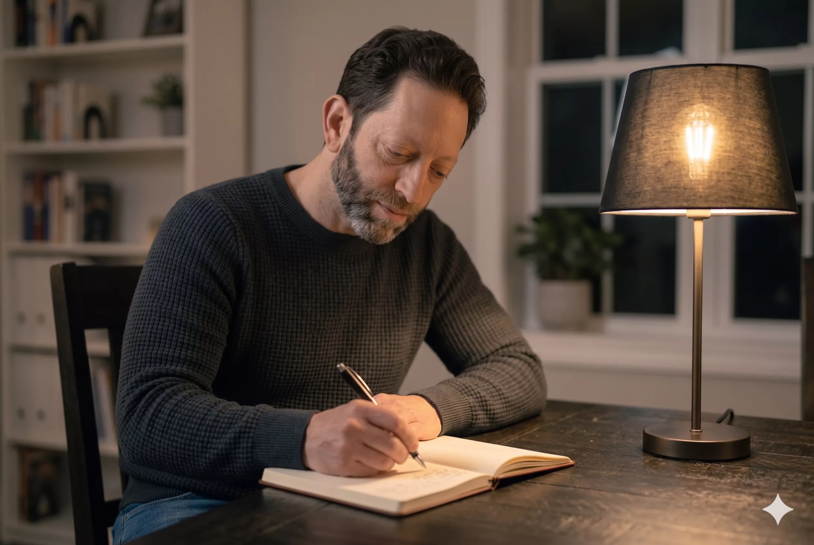
Every Sunday evening, Jordan sits at the kitchen table after the house has quieted. He makes tea, opens his journal, and works through five questions. It takes ten minutes. Sam has started asking about it — not to audit him, but because she notices the difference in the weeks when he skips it.
The weekly check-in is not paperwork — it is a maintenance conversation with yourself. It closes the week and opens the next one intentionally. The people around you will feel the difference even if they can't name it.
Structured self-monitoring protocols — weekly reviews of emotional state, regulation behaviour, and interpersonal functioning — have been validated as effective maintenance tools in multiple evidence-based treatment programmes. SAMHSA's Anger Management for Substance Abuse and Mental Health Clients (2002) recommends ongoing structured self-assessment as a core component of long-term anger management, noting that clients who engaged in weekly self-monitoring maintained treatment gains at 12-month follow-up at a significantly higher rate than those who relied on memory and impression alone. The clinical logic is straightforward: a weekly prompt enforces the attentional focus that emotional regulation requires. Without this structured prompt, day-to-day life tends to redirect attention away from regulation behaviour until a significant incident occurs — by which point drift is advanced. The check-in catches drift at 5% so it never reaches 50%.
"Ongoing self-assessment is not an adjunct to treatment — it is treatment continued under the client's own direction."
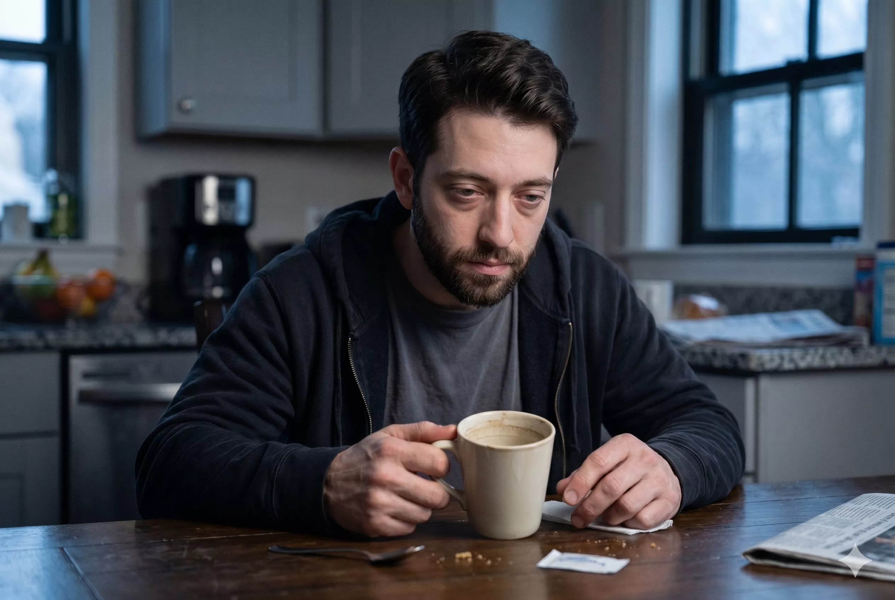
Jordan has started logging his sleep hours and his morning irritability score every day. The pattern is unmistakable now — he has seen it eight weeks running. Under six hours, the morning is already compromised before a single event has occurred. The data doesn't surprise him anymore. It clarifies.
Tracking sleep hours alongside your irritability score is one of the most powerful things you can do in Phase 5. When you see the pattern clearly, you stop blaming the day and start managing the night before. Sleep is not recovery — it is anger regulation in advance.
This module extends the sleep content introduced in M65 (Sleep & Anger) by focusing on the tracking relationship between sleep hours and next-day irritability — a correlation that becomes measurable and personally actionable through consistent monitoring. Matthew Walker, Ph.D., whose neuroimaging research demonstrated a 60% increase in amygdala reactivity following sleep deprivation, further showed that the prefrontal cortex's ability to modulate amygdala response is specifically degraded by insufficient sleep — the same regulatory circuit targeted by this entire programme. Critically, the effect is dose-dependent and cumulative: each night below 7 hours incrementally increases the irritability baseline of the following day, and this accumulates across multiple nights. Tracking this relationship personally — rather than relying on general research findings — transforms an abstract clinical finding into personalised data that motivates behaviour change. Research in behaviour change consistently shows that personalised feedback loops produce stronger and more durable habit modification than general education alone.
"The shorter your sleep, the shorter your life — and the hotter your temper."
Jordan has been honest with Benne about the pattern: a rough week at work, two drinks at home, and an argument with Sam that he barely remembers starting. He knows the sequence. He has watched it repeat. What he hasn't done yet is name it plainly.
Every regulation skill you have built in this programme operates from the prefrontal cortex. Alcohol specifically impairs that region first. Using alcohol to manage stress is not a shortcut — it is handing your anger the keys while your regulation system sleeps.
The relationship between alcohol and anger is well-established in clinical research. Alcohol produces disinhibition by impairing prefrontal cortical functioning — the same region responsible for impulse control, emotional regulation, and the cognitive reappraisal strategies central to this programme. Studies published in the journal Aggressive Behavior have demonstrated that alcohol intoxication increases the likelihood of aggressive responding to ambiguous social cues, and reduces the capacity to generate non-aggressive alternatives once provoked. Raymond W. Novaco, Ph.D., identified substance use as one of the most significant moderating variables in anger management outcomes — clients with co-occurring alcohol use consistently showed lower treatment gains unless substance use was addressed concurrently. The mechanism is straightforward: the skills built in this programme are cortically mediated. Alcohol temporarily disables the cortex. The two are pharmacologically incompatible during the window of impairment.
"Alcohol myopia narrows cognitive capacity to immediate provocations, making de-escalation strategies functionally unavailable."
Jordan mentions to Dr. Patel that he started a new medication for a physical condition three months ago — roughly the same time he noticed his irritability baseline seemed higher. He had not connected the two. Dr. Patel sets down her pen.
Anger is not always psychological. Sometimes the body is running chemistry that makes regulation harder than it should be. Knowing the difference is not weakness — it is precision. Tell your doctor what you're tracking.
Several classes of prescription medication have documented effects on anger and emotional reactivity. Corticosteroids (used for inflammatory conditions) are well-established causes of mood dysregulation including irritability and anger, as documented in studies published in the Journal of Clinical Psychiatry. Some antidepressants — particularly SSRIs and SNRIs during the initial activation phase — can temporarily increase agitation in a subset of patients, particularly those with underlying mood dysregulation. Stimulant medications used for attention disorders may increase irritability in some adults. Conversely, certain medications can assist with anger regulation: mood stabilisers (such as lithium or valproate), long-term SSRI treatment in appropriate candidates, and beta-blockers for the physiological arousal component of anger have each shown benefit in specific clinical populations. The clinical imperative in this module is not to recommend or discourage any medication, but to ensure that Jordan — and the participant — understands the biological dimension of emotional regulation and maintains open communication with their prescribing clinician about any changes in anger or irritability following medication changes.
"Irritability and anger are among the most commonly reported yet under-recognised adverse effects of medications affecting the central nervous system."
Dr. Patel asks Jordan to describe how anger was expressed in his household growing up. He is quiet for a long moment. "My father didn't shout," he says finally. "He went cold. For days. That was worse than shouting." He pauses. "I shout. I became the other version."
You did not choose the anger patterns you were raised in. But you are choosing, right now, whether to pass them forward. The family anger map is not about blame — it is about clarity. You cannot change what you cannot see.
Research in developmental psychology has consistently documented the intergenerational transmission of anger and aggression. John M. Gottman, Ph.D., whose emotion-coaching research spans decades, demonstrated that parents' own emotional regulation capacity — or lack of it — is the strongest single predictor of children's emotion regulation development. Children of highly reactive parents show elevated amygdala reactivity in neuroimaging studies, suggesting that chronic exposure to angry home environments shapes the neural architecture of emotional response. This is not deterministic: the transmission is probabilistic, not inevitable. Daniel J. Siegel, M.D., clinical professor of psychiatry at the UCLA School of Medicine and author of extensively peer-reviewed work on interpersonal neurobiology, has shown that adults who develop a coherent narrative of their own childhood — who can make sense of what happened and how it affected them — demonstrate secure attachment and healthy emotional regulation regardless of what their early environment contained. The family anger map is a clinical tool for building exactly that coherence.
"The best predictor of a child's attachment security is the parent's ability to make sense of their own childhood experience."
Jordan meets Marcus — his accountability partner from the support network map in M68 — for coffee. It has been eight weeks since they spoke properly. Jordan realises, sitting down, that the gap itself is information. A strong accountability relationship doesn't go eight weeks without contact.
An accountability partner who only hears the good weeks is a cheerleader, not a support. The relationship only works when it gets the hard weeks too. If you've been editing what you share, that is the first thing to fix.
Social support is one of the most robust protective factors in the maintenance of behavioural change across clinical populations. G. Alan Marlatt, Ph.D., identified positive social support as a direct buffer against relapse in his relapse prevention model, noting that individuals with at least one person who was aware of their change goals and actively encouraging them maintained gains at significantly higher rates at 12-month follow-up. However, Marlatt also noted that the quality of the support relationship matters more than its frequency — a supportive relationship that avoids difficult conversations provides less protection than one that maintains honest contact. John M. Gottman, Ph.D., whose research on relationships extends beyond couples to friendship and mentoring, similarly found that relationships characterised by bids and responses — genuine check-ins and honest answers — sustain change in ways that merely friendly relationships do not. This module invites a formal review: not just whether the accountability relationship exists, but whether it is functioning at the depth it needs to.
"Social support is not merely comfort — it is a functional component of the change system itself."
Benne sets a blank sheet of paper in front of Jordan. "You're approaching the end of the formal programme," he says. "But the work doesn't end — it just becomes yours to manage. This document is how you manage it." He taps the page. "Write the plan before the programme ends, not after."
The maintenance plan is your handover document — from the programme to yourself. It is the most important thing you will write in Phase 5. Do not treat it as a formality. Treat it as a contract with the person you have become.
Written maintenance plans are a standard component of evidence-based treatment across multiple clinical domains, from substance use recovery to CBT for depression and anxiety. G. Alan Marlatt, Ph.D., included a written maintenance plan as a core deliverable of his relapse prevention model — not as a bureaucratic exercise but as a functional tool. His research showed that clients who produced a written plan specifying their high-risk situations, coping strategies, and support contacts maintained treatment gains significantly longer than those who relied on memory and intention. The 30/60/90-day structure reflects the clinical finding that the first 90 days post-treatment represent the highest-risk window for relapse across most behavioural change programmes. Structuring the maintenance plan across this window — with explicitly decreasing intensity as regulation becomes more automatic — mirrors the expected trajectory of skill consolidation and provides a scaffold during the most vulnerable period.
"The written maintenance plan externalises the change strategy, making it available when internal resources are most depleted."
Jordan started the gratitude practice in M44 as an exercise. He is now on day 23 of an unbroken streak — three things every morning before the day begins. Sam noticed it before he mentioned it. "You seem different in the mornings," she said. He didn't know how to explain it except to say: "I'm starting the day looking for something good."
The angry mind scans for threats. The grateful mind scans for gifts. These are literally different attentional systems — and daily practice determines which one gets stronger. Three items. Every morning. No exceptions.
Robert A. Emmons, Ph.D., professor of psychology at UC Davis and editor-in-chief of the Journal of Positive Psychology, has conducted extensive research on gratitude as a psychological intervention. His randomised controlled trials demonstrated that participants who wrote three grateful items daily for 10 weeks showed significant reductions in negative affect, increased positive emotion, and improved physical wellbeing compared to control groups. Michael E. McCullough, Ph.D., whose collaborative research with Emmons has been published in the Journal of Personality and Social Psychology, further identified that gratitude practice reduces dispositional envy, resentment, and hostility — each of which is implicated in chronic anger. The mechanism is attentional retraining: gratitude practice strengthens the neural pathways associated with positive appraisal, gradually recalibrating the default attentional bias away from threat and toward opportunity. Consistency — the streak — is the key variable: single-session gratitude has limited effect, while sustained daily practice produces measurable shifts in dispositional affect within 3–6 weeks.
"Gratitude blocks toxic emotions — envy, resentment, regret — that destroy happiness and drive hostility."
Benne asks Jordan to describe, in his own words, who he was when he started Phase 1 — and who he is now. Jordan is quiet for a long time. What he finally says is not what he expected to say. "I thought I was coming here to fix a temper. I think what actually changed is that I stopped being afraid of myself."
Your progress narrative is not vanity — it is medicine. Knowing where you started and how you got here is one of the strongest protections against going back. Write your story. Own it. It belongs to you.
Narrative approaches to psychological change have substantial research support. Daniel J. Siegel, M.D., has documented that the capacity to construct a coherent, integrated narrative of one's own experience — including difficult emotional history — is strongly associated with secure attachment, emotional regulation, and resilience. His concept of the "coherent narrative" as a predictor of wellbeing has been replicated across numerous studies in developmental and clinical psychology. In the context of anger management specifically, G. Alan Marlatt, Ph.D., identified identity consolidation — the stable self-concept of "I am someone who has changed" — as a protective factor against relapse. When a person can clearly articulate who they were, what shifted, and why they will not return, they have built a psychological barrier against regression that operates independently of situational pressure. The progress reflection in this module is not retrospective sentiment; it is a forward-facing clinical tool designed to strengthen the identity that the preceding 86 screens have been building.
"When we can make sense of our lives by constructing a coherent narrative, we move toward integration and health."
Benne raises the question Jordan has been avoiding. "What happens after this programme ends? Who else will know what you've been working on?" Jordan realises the honest answer is: almost no one. The work has been largely private. That, Benne tells him, is a structural vulnerability.
You do not need a large group. You need at least one person who knows what you have been doing and why it matters to you. That witness — that shared knowledge — is what makes the change real in the social world, not just inside your head.
Peer support has a robust evidence base as a maintenance factor in behavioural health. SAMHSA's research on recovery support services identifies peer relationships as one of four pillars of sustained recovery — alongside home, health, and purpose. The clinical mechanism is social reinforcement: when valued relationships are built around the new behaviour, the cost of abandoning that behaviour includes the cost of changing those relationships. This is distinct from external pressure — it is the natural consequence of being known in a different way. Raymond W. Novaco, Ph.D., similarly noted in his follow-up research that anger management gains were most durable in individuals who disclosed their change goals to at least one meaningful social relationship and who maintained some form of ongoing group or dyadic accountability. The peer support plan in this module is not aspirational — it is a clinical recommendation based on consistent evidence across treatment modalities.
"Recovery is not a solo endeavour. The social environment either sustains or erodes the changes made in treatment."
Brother Ellis meets with Jordan for what Jordan assumes will be an encouraging conversation. Instead, Brother Ellis asks a direct question: "Has the spiritual practice actually changed anything in you — or has it remained at the level of habit without depth?" Jordan finds the question harder to answer than he expected.
The spiritual practices in this programme are not an add-on — they are a parallel regulation system rooted in something deeper than technique. If the practice has become routine without depth, it has lost its power. Review it honestly. Bring the real things.
Research on the intersection of spirituality and emotional regulation has grown substantially over the past two decades. Studies published in peer-reviewed journals including the Journal of Health Psychology and Psychological Science have documented that regular, personally meaningful spiritual practice — as distinct from mere religious behaviour — is associated with reduced trait anger, lower cortisol reactivity to stress, and greater emotional resilience. The key variable in this research is not frequency of practice but depth of engagement: individuals who reported their spiritual practice as meaningful and relational showed greater emotional regulation benefits than those who practised frequently but reported low personal meaning. This distinction parallels the clinical finding in mindfulness research that mere technique without present-moment engagement produces limited benefit. The spiritual formation review in this module asks not whether Jordan has been practising — but whether the practice has been genuine, and whether it has been brought into contact with the full reality of his experience, including the parts he is most reluctant to examine.
"Guard your heart with all diligence; for out of it are the issues of life."
Dr. Patel shows Jordan the anger styles framework he first encountered in Phase 1. "Look at this again," she says. "Not as a label — as a mirror. Where do you see yourself now compared to where you began?" Jordan studies it. The answer is more nuanced than he expected.
Your anger style is not your identity — it is a default pattern that formed under specific conditions. You have spent this programme building a new default. Reviewing the styles now lets you see exactly how much ground you've covered — and where the remaining work is.
Charles D. Spielberger, Ph.D., whose STAXI-2 instrument introduced in M74 measures four dimensions of anger expression, documented that individuals with high Anger Expression-Out scores (explosive style) and high Anger Expression-In scores (implosive style) both show elevated cardiovascular risk and poorer interpersonal outcomes than those with high Anger Control scores. His research demonstrated that the expression dimension — not just the experience of anger — is the critical clinical target. Raymond W. Novaco, Ph.D., similarly distinguished between anger experience (the emotional state) and anger expression (what the person does with it), noting that successful treatment shifts the expression dimension most durably. The anger styles review in this module is a structured self-assessment of where the participant's expression style has moved across the programme. It is not a diagnostic re-labelling but a progress measurement: have the expression habits that brought them to Phase 1 changed, and in what direction?
"The management of anger expression — not merely its suppression or its venting — is the hallmark of treatment success."
Brother Ellis asks Jordan to name the person he has found hardest to forgive. Jordan is quiet for a long time. The name he finally says is not someone who wronged him. It is his own name. "I keep waiting to feel like I deserve to move forward," he says. Brother Ellis nods slowly. "That waiting — that is the unforgiveness."
Forgiving yourself is not letting yourself off the hook — it is releasing yourself from a debt that keeping is costing you more than it is costing anyone else. The person who wronged others needs to make amends. But carrying the sentence indefinitely does not help the people you hurt. It only prevents you from becoming someone who won't hurt them again.
Robert D. Enright, Ph.D., professor of educational psychology at the University of Wisconsin–Madison, is one of the leading researchers on forgiveness as a clinical intervention. His four-phase model — Uncovering, Decision, Work, and Deepening — has been validated in randomised controlled trials across multiple clinical populations, including adults with chronic anger, post-incarceration samples, and couples recovering from betrayal. Enright's research defines forgiveness precisely: it is not condoning the offence, reconciling with the offender, or forgetting what occurred. It is the freely chosen gift of releasing the offender — or oneself — from an emotional debt. His studies document that participants who completed forgiveness interventions showed significant reductions in trait anger, anxiety, and depression, alongside increased self-esteem and hope. Importantly, Enright's model applies equally to self-forgiveness, which he identifies as a distinct but parallel process: the injured party is the self, and the work of releasing the self from condemnation follows the same four phases.
"Forgiveness is not forgetting, nor is it condoning or excusing offences. It is a gift freely given to the one who may not deserve it."
Sam tells Jordan something he doesn't expect: "I trust you more than I have in years." She says it quietly, over dinner, without drama. Jordan doesn't know what to do with it at first. Then he writes it down in his journal — with the date — because he wants to remember what trust returning actually feels like.
You cannot demand trust back — you can only earn it. The tracker is not about measuring the other person — it is about measuring your own consistency. Every day you show up regulated, honest, and present is a deposit. The account builds slowly. It builds surely.
John M. Gottman, Ph.D., whose laboratory research on couples spans more than four decades, has documented the specific behavioural sequence through which trust is rebuilt after relational damage. His research identifies three core mechanisms: consistent small behaviours over time (rather than large irregular gestures), attuned repair attempts following conflicts, and what he terms "positive sentiment override" — the gradual rebuilding of a positive emotional account that allows the betrayed partner to interpret ambiguous behaviours charitably again. Gottman's data show that trust typically requires 6–18 months of consistent behaviour to meaningfully rebuild after significant anger episodes, and that attempting to accelerate this timeline by demanding acknowledgement of change paradoxically slows the process. The clinical implication for this module is that Jordan's role is not to persuade Sam that he has changed — it is to continue changing and allow the evidence to accumulate at her pace.
"Trust is built in very small moments — in the willingness to turn toward your partner in times of need."
Brother Ellis asks Jordan the question no one has asked before: "What has the anger given you?" Jordan starts to deflect — but Brother Ellis holds the space. "I don't mean it as an excuse. I mean it seriously. What has the anger, across all your years carrying it, revealed to you about what you love, what you fear, and who you want to be?"
Every person who enters this programme arrives with anger that has been teaching them something. The tragedy is not that the anger existed — it is that no one ever helped them read the lesson. You have now read it. That changes everything.
Raymond W. Novaco, Ph.D., has consistently argued in his clinical literature that anger, in its adaptive form, serves important psychological functions: it signals injustice, mobilises action, and communicates boundaries. The clinical problem addressed in this programme has never been the existence of anger but its chronic dysregulation — anger that fires too easily, too intensely, or in ways disproportionate to the provocation. James J. Gross, Ph.D., similarly distinguishes between the emotion itself, which carries information, and the regulation failure, which distorts expression and consequence. The contemplation in this module invites Jordan — and the participant — to step back from the clinical work and take a philosophical view: what has this anger, across its full arc, been trying to communicate? Novaco's work suggests that individuals who can answer this question — who can identify the legitimate needs, values, and injuries that anger has been signalling — are better positioned for sustained maintenance than those who treat anger purely as a problem to be eliminated.
"Anger is a basic emotion rooted in the appraisal of threat — it is not pathological by nature, only by chronic dysregulation."
Benne pulls a blank index card from his shirt pocket. "This," he says, "is your most practical tool from this entire programme. Not the theory — the card. When everything else is offline and you are in the middle of an escalating moment, this is what your hands can reach for." He slides it across the table. "Build it today. Print it. Put it in your wallet."
The card is not a crutch — it is a pre-commitment device. You wrote it when you were calm, which means it carries the wisdom of your best self into your worst moments. That is not weakness. That is advanced emotional intelligence.
Pre-commitment devices — tools created during calm that activate automatically during crisis — have a strong evidence base in behavioural psychology and clinical intervention design. The emergency calm card operationalises the principle that cognitive load during emotional flooding makes deliberate strategy retrieval unreliable. When the hypothalamic-pituitary-adrenal axis is activated and the prefrontal cortex is partially offline, the individual cannot efficiently retrieve and implement complex strategies from memory. A physical card bypasses this limitation: it is already written, already decided, requiring only the physical act of reaching for it. SAMHSA's anger management protocols include similar "coping cards" as standard tools for high-risk situations. Raymond W. Novaco, Ph.D., has described the advance preparation of coping responses as a core element of anger inoculation — the cognitive and behavioural rehearsal of regulated responses to anticipated provocations. The card externalises this rehearsal into a durable physical form.
"Coping self-statements prepared in advance significantly outperform strategies generated in the moment of arousal."
Dr. Patel asks Jordan to walk through the last significant conflict he had with Sam — blow by blow. What triggered it. What he noticed in his body. What he did. What Sam did. How it ended. Jordan works through it carefully, and only when he has finished does Dr. Patel say: "Compare that to a year ago. Tell me what is different."
The goal was never zero conflict. Conflict is human. The goal was conflict that moves toward resolution rather than escalation — where both people feel heard rather than attacked. If that is happening now, the programme has done its work.
John M. Gottman, Ph.D., has identified through longitudinal research that the quality of conflict resolution — not its absence — is the strongest predictor of relationship longevity and satisfaction. His research distinguishes between "perpetual problems" (present in all relationships and never fully resolved) and "solvable problems" (situational and addressable). He found that 69% of relationship conflicts fall into the perpetual category — meaning the goal is not to resolve them but to manage them with mutual respect and humour. Successful couples, in Gottman's data, are not those who fight less — they are those whose repair attempts are accepted more reliably and whose conflict episodes end with both people feeling heard. The conflict resolution review in this module applies this framework to Jordan's progress: the measure is not whether conflict has disappeared, but whether the pattern of initiation, escalation, and repair has changed in the direction the programme has been targeting.
"It's not the absence of conflict that makes a relationship stable — it's the presence of repair."
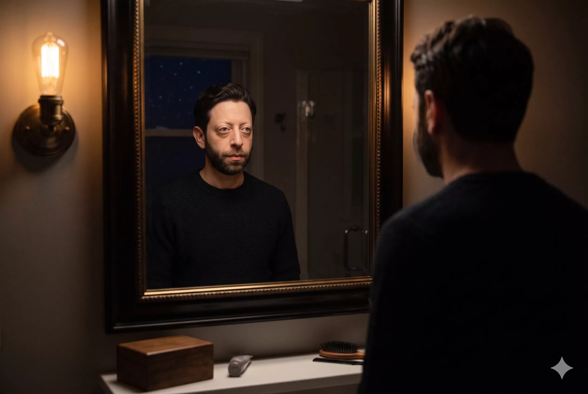
Benne asks Jordan the question the programme has been building toward since Phase 1: "If anger is no longer the thing that defines you — what does?" Jordan sits with it. He has never been asked this. He was always the man with the temper. The difficult one. The one people walked around. Now those descriptions feel like they belong to someone else.
You are not your worst moments. You are not your diagnosis, your pattern, or your history. You are the choices you make when it matters — and you have been making different ones. That is identity. That is character. That is yours.
Steven C. Hayes, Ph.D., professor of psychology at the University of Nevada and developer of Acceptance and Commitment Therapy (ACT), identifies self-as-context — the stable observer identity that remains consistent regardless of thoughts, feelings, or behavioural history — as a core therapeutic target. His research demonstrates that individuals who can separate their identity from their psychological content (their anger, their patterns, their diagnoses) show greater flexibility, resilience, and sustained behavioural change. This is the clinical foundation of the identity reconstruction in M96: Jordan is not being asked to pretend his anger history did not occur, but to recognise that his identity is not located in that history. It is located in the values he is choosing to act on now. ACT's committed action framework — which will be explored in M97 — extends this: identity is confirmed not by declaration but by the consistent enactment of chosen values under the full range of conditions that life presents.
"You are not the anger, the fear, or the thought — you are the one who notices them and chooses the next step."
Dr. Patel explains the difference between goals and values. "A goal is something you achieve and tick off," she says. "A value is a direction you walk in — indefinitely, regardless of whether you have arrived. You don't finish being a loving partner. You don't graduate from being a present father. These are directions, not destinations." Jordan writes that down.
The committed action plan is not about perfection. It is about having a direction that pulls you forward even when the feelings push you sideways. Values do not require you to feel like following them — only to choose them. Again. And again.
Steven C. Hayes, Ph.D., whose Acceptance and Commitment Therapy is one of the three "third-wave" cognitive-behavioural therapies with a substantial evidence base, describes committed action as the behavioural pillar of ACT: the ongoing, flexible, values-consistent behaviour that is pursued regardless of obstacles, thoughts, or feelings. Unlike goal-setting — which targets a fixed endpoint — committed action targets a direction of travel, allowing for failure, recommitment, and continued movement. Hayes's research, published extensively in peer-reviewed journals including the Journal of Consulting and Clinical Psychology, shows that committed action combined with values clarification produces significantly better long-term outcomes than skills training alone in multiple clinical populations. For anger management specifically, the committed action plan operationalises the identity reconstruction of M96: the values Jordan named become the compass for the specific behaviours he commits to maintaining. When he fails — and he will fail — the plan does not expire. It simply marks the direction back.
"Committed action means doing what your values require, even when your mind argues against it."
Dr. Patel sets the intake PROMIS score beside the tablet. "I want you to complete the measure again," she says. "Same five items. Same scale. Honest answers — not how you want to feel, but how you actually felt in the past seven days." Jordan looks at his original score. Then he begins.
This score is your report card — written not by a teacher but by your own nervous system. Whatever it shows, receive it as information, not judgment. Then keep going. The measurement continues. The work continues. The change continues.
Rate each item for the past 7 days. 1 = Never | 2 = Rarely | 3 = Sometimes | 4 = Often | 5 = Always
The three of them — Benne, Dr. Patel, and Brother Ellis — are gathered together for the first time in the same room. Jordan sits across from them, feeling the weight and the warmth of it simultaneously. Each has something they want to say before the ceremony.
We are proud of you. Not because you finished — but because you kept going when stopping was easier. That is the quality this programme was always trying to surface in you. It was already there. Now everyone can see it.
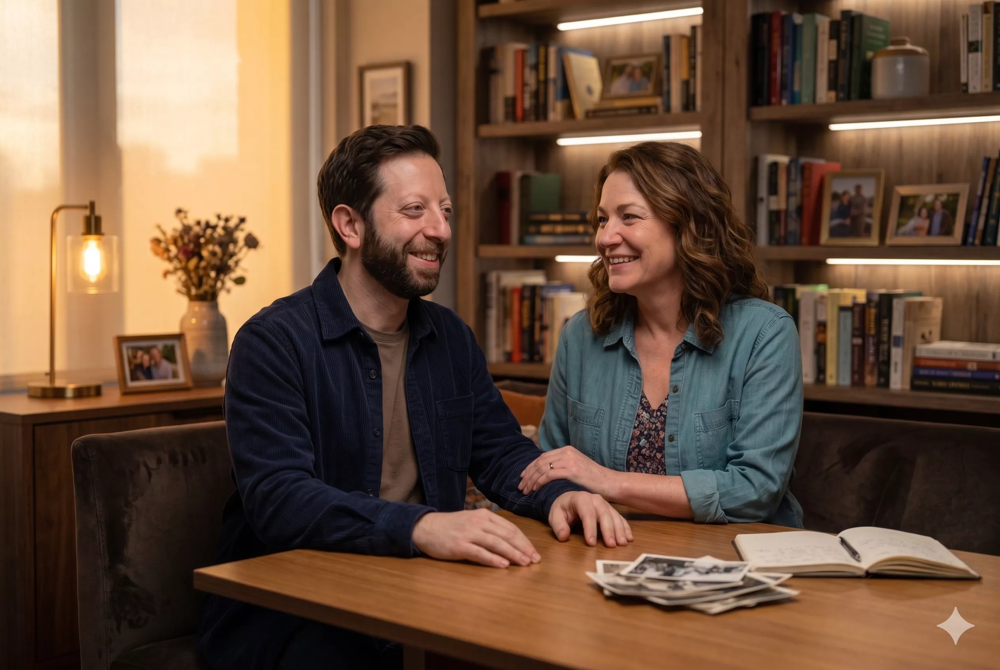
Sam asks Jordan to tell her — not the programme, not the mentors — but her, directly: what happened in there? Jordan sits with the question for a long moment. Then he speaks. Not a summary. A testimony.
Jordan's testimony is also yours to write. The story of this programme belongs to the person who lived it — and that person is you. What you have done here is real. The people who love you will feel the difference. Some already do.
There is no fanfare. No crowd. Just Jordan, the programme, and the quiet knowledge of what has been accomplished. He closes his journal. He looks at the final page — the testimony he wrote in M100. He reads it once. Then he stands up. The storm has been calmed.
To you — the person completing this programme — I want to say something directly: what you did here required courage. It required honesty. And it required showing up, screen after screen, even when it was uncomfortable. That is not small. That is everything. Congratulations. You earned this.